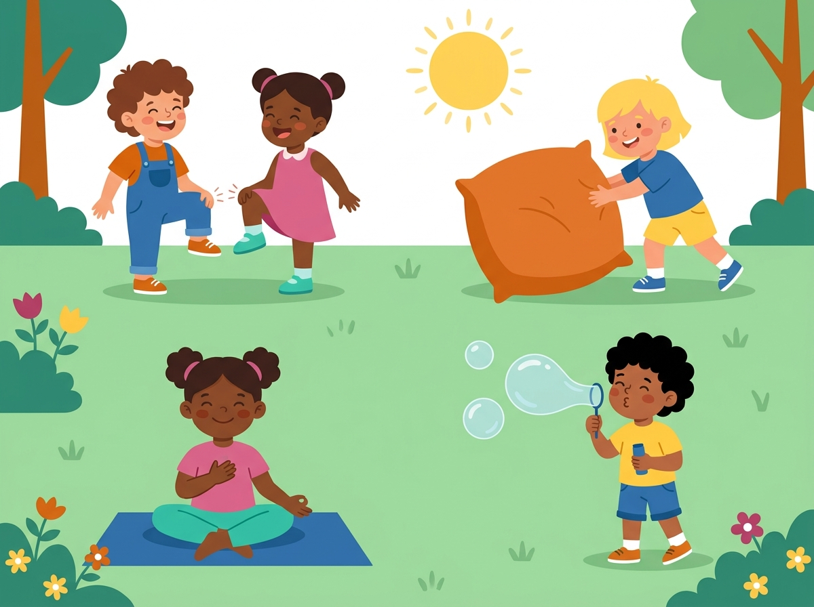
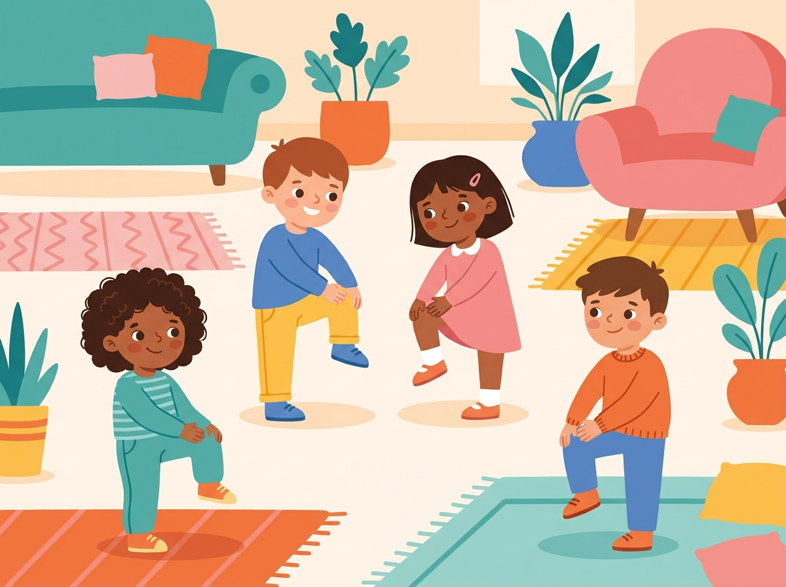
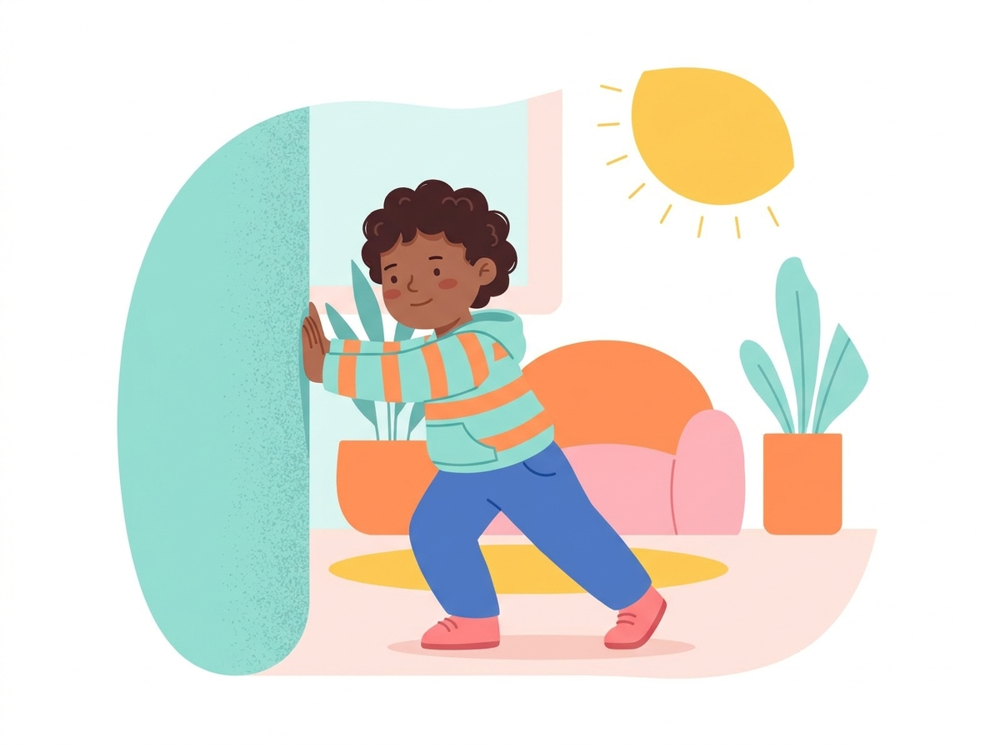
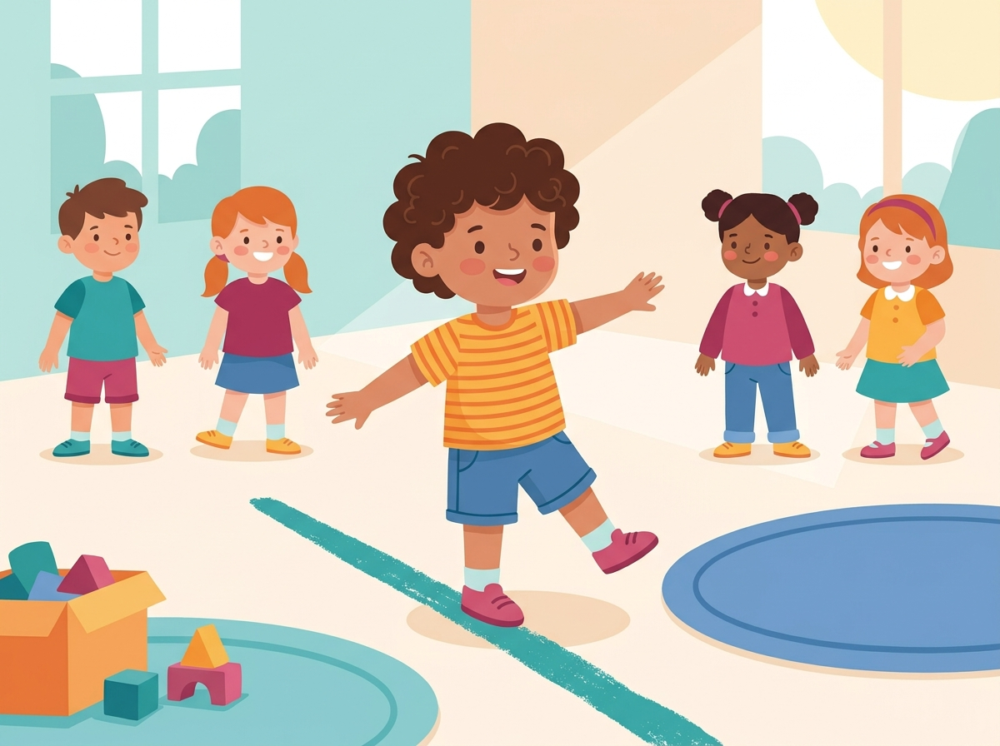
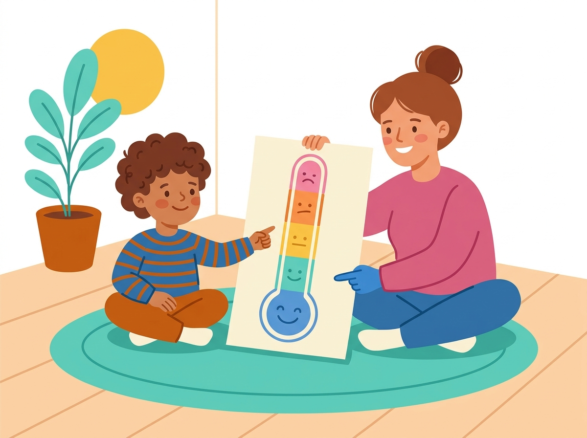
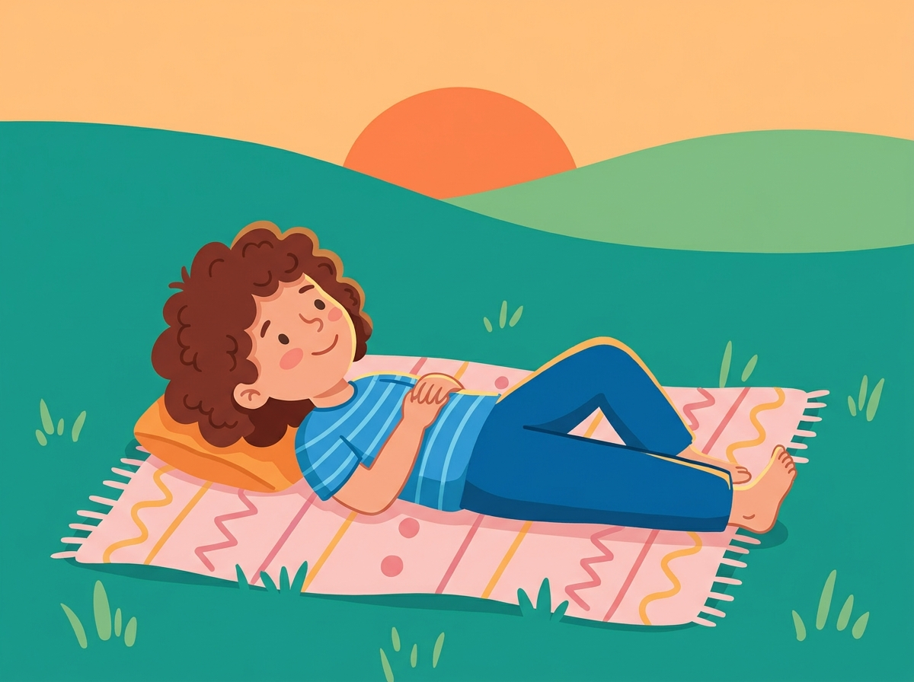

Guia Completo · 30 Dias de Rotina
Ginástica Cerebral para Crianças
120 atividades de coordenação, força, equilíbrio e respiração organizadas em uma rotina diária de 4 exercícios — para pais e mães de crianças de 3 a 10 anos que enfrentam explosões de raiva, agitação, dificuldade de foco, birras frequentes e desobediência.
🔀 Coordenação💪 Força & Propriocepção🎈 Regulação Emocional🌬️ Respiração & Foco

Antes de começar
Como usar este guia
Este guia reúne 120 atividades organizadas em uma rotina de 30 dias. Todo dia, seu filho ou filha vai praticar 4 atividades curtas — uma de cada categoria — em cerca de 7 a 15 minutos no total. Não é preciso equipamento especial nem experiência prévia: qualquer adulto pode conduzir.
📅 Estrutura do programa
- 30 dias, organizados em 5 semanas de 6 dias.
- 4 atividades por dia — uma de cada uma das 4 categorias.
- Cada atividade leva entre 1 e 10 minutos.
- Pode ser feito em qualquer ordem ao longo do dia.
⏰ Quando praticar
- Escolha um horário fixo — de preferência fora de momentos de crise.
- Bons momentos: ao acordar, após a escola, antes do dever de casa.
- Evite praticar como punição ou logo após uma birra.
- Um horário previsível ajuda mais do que a atividade perfeita.
🧩 Se a criança recusar
- Não force — ofereça, convide, demonstre você primeiro.
- Troque a ordem: comece pela atividade que ela mais gosta.
- Tudo bem pular um dia; retome no dia seguinte sem culpa.
- Transforme em brincadeira, não em tarefa obrigatória.
✅ Cada atividade traz
- Faixa etária, duração e materiais necessários.
- Passo a passo simples de como conduzir.
- Por que funciona — a lógica por trás do exercício.
- Uma dica extra para dias mais difíceis.
Um aviso importante: este guia é um complemento lúdico à rotina familiar e não substitui avaliação, diagnóstico ou acompanhamento de profissionais de saúde. Se as explosões de raiva, a agitação ou a desobediência forem muito intensas, frequentes ou estiverem prejudicando a rotina escolar e familiar, procure apoio de um pediatra, psicólogo infantil ou terapeuta ocupacional.
🧺 Kit básico sugerido (opcional)
A grande maioria das atividades não exige nada além do corpo. Estes poucos itens, se disponíveis em casa, deixam alguns dias ainda mais ricos:
- Bola de sabão para bolhas
- Massinha de modelar (uma firme, tipo theraputty)
- Bola de meia ou bolinha macia
- Cobertor ou almofada pesada
- Fita adesiva ou giz para desenhar linhas no chão
- Pote transparente, água, cola e glitter (pote da calma)
As 4 categorias
De onde vêm as atividades
As 120 atividades foram organizadas em 4 categorias que se complementam. Todo dia da rotina inclui uma atividade de cada uma delas, formando um pacote completo para o corpo e para as emoções.
🔀
Coordenação & Linha Média
Movimentos que cruzam o corpo de um lado para o outro, ajudando os dois hemisférios do cérebro a trabalharem juntos — a base para ler, escrever, prestar atenção e organizar o próprio corpo no espaço.
💪
Ritmo & Força
Atividades de 'trabalho pesado' que empurram, puxam e pressionam as articulações — o jeito mais eficaz de organizar o corpo e prevenir explosões antes que elas comecem.
🎈
Equilíbrio & Emoções
Equilíbrio corporal e consciência das emoções andam juntos: quando o corpo se sente seguro e estável, fica muito mais fácil nomear e atravessar sentimentos grandes sem explodir.
🌬️
Calma & Foco
Respiração e jogos de atenção ativam o sistema nervoso parassimpático e treinam as funções executivas — a dupla que sustenta o autocontrole diante de birras e desobediência.
Sobre as fontes: as atividades se inspiram em práticas amplamente usadas em Terapia Ocupacional, Integração Sensorial (Ayres), educação psicomotora, mindfulness infantil, ioga para crianças e nos movimentos populares do método Brain Gym® (Dennison) — usados aqui como exercícios de coordenação e cruzamento de linha média, sem qualquer promessa de efeito neurológico específico. Também trazem ideias de autores como Daniel Siegel & Tina Payne Bryson ("Name it to tame it") e Bruce Perry sobre regulação emocional através do corpo.
Mapa do programa
Visão geral das 5 semanas
Um resumo rápido de para onde a rotina caminha ao longo dos 30 dias — útil para acompanhar o progresso ou retomar de onde parou.
| Semana | Dias | Tema | Foco |
|---|
| Semana 1 | Dias 1–6 | Descobrindo o Corpo | Fundamentos de coordenação, ritmo, equilíbrio e respiração |
| Semana 2 | Dias 7–12 | Construindo Ritmo | Bilateralidade, força leve e propriocepção |
| Semana 3 | Dias 13–18 | Liberando Energia com Segurança | Equilíbrio corporal e primeiras ferramentas emocionais |
| Semana 4 | Dias 19–24 | Nomeando Sentimentos | Consciência emocional e funções executivas |
| Semana 5 | Dias 25–30 | Colhendo a Calma | Consolidando o que foi praticado |
Dica de acompanhamento: use as caixinhas "Feito" em cada atividade para marcar o progresso diário junto com a criança. Ver os dias se acumulando costuma ser motivador tanto para os pais quanto para os pequenos.
Semana 1
Descobrindo o Corpo
Dias 1 a 6 — Fundamentos de coordenação, ritmo, equilíbrio e respiração

Nesta primeira semana o objetivo não é 'corrigir comportamento' — é ajudar seu filho ou filha a conhecer melhor o próprio corpo. Crianças que têm explosões de raiva, agitação e birras frequentes muitas vezes ainda não sentem com clareza os próprios sinais internos. Vá com calma, sem cobrar perfeição nos movimentos: o que importa é a repetição gentil, todos os dias, no mesmo horário se possível.
Dia 1Marcha Cruzada (Cross Crawl) · Bater Pés Alternados · Almofada Pesada no Colo · Aperta o Limão (Relaxamento Muscular)
Dia 2Cotovelo-Joelho · Rolar Massinha com Rolo · Pular no Colchão ou Cama Elástica · Abraço de Borboleta
Dia 3Toque no Calcanhar por Trás · Passar Bola Costas-com-Costas · Balançar Devagar (linear) · Varredura Corporal (Body Scan)
Dia 4Oito Deitado (Lazy 8) · Bola de Meia entre as Mãos · Cadeira de Balanço · STOP (Pare, Respire, Observe, Prossiga)
Dia 5Oito com as Duas Mãos · Copiar a Sequência da Mesa · Equilíbrio num Pé Só · Respiração da Flor e da Vela
Dia 6Oito do Alfabeto (Alphabet 8s) · Engatinhar (Andar de Gatinho) · Andar na Linha · Respiração do Balão
Semana 1 · Descobrindo o Corpo
Dia 1 de 30
Hoje começamos devagar: um movimento de coordenação simples, um toque rítmico com os pés, um peso confortável no colo e o primeiro exercício de tensão-relaxamento muscular.
🔀Coordenação
Marcha Cruzada (Cross Crawl)
Idade: 3–10 anosDuração: 3 a 5 minutos
Em pé, a criança marcha bem devagar tocando o joelho esquerdo com a mão direita e depois o joelho direito com a mão esquerda.
- Peça para a criança ficar em pé, braços soltos ao lado do corpo.
- Marchando bem devagar, ela toca o joelho esquerdo com a mão direita.
- Troca de lado: toca o joelho direito com a mão esquerda, repetindo por 1 a 2 minutos.
Por que funciona: O movimento alternado exige que os dois lados do corpo conversem entre si, exercitando o planejamento motor que também sustenta a atenção e o autocontrole.
Dica p/ dias difíceis: Se a criança estiver muito agitada, comece bem devagar e conte em voz alta junto com ela — o ritmo compartilhado já começa a acalmar.
💪Força & Propriocepção
Bater Pés Alternados
Idade: 3–6 anosDuração: 2 minutos
Sentada, a criança marcha batendo os pés no chão alternadamente, seguindo um ritmo simples.
- Sente a criança numa cadeira com os pés soltos.
- Peça para bater o pé esquerdo e depois o direito no chão, num ritmo constante.
- Cante ou conte junto para manter o ritmo por 1 a 2 minutos.
Por que funciona: Um movimento simples e discreto que ajuda a canalizar a inquietação motora dos pés, comum em crianças pequenas em momentos de espera.
Dica p/ dias difíceis: Ótimo para usar sentado à mesa antes das refeições, quando a criança tem dificuldade de ficar parada.
🎈Regulação Emocional
Almofada Pesada no Colo
Idade: 3–8 anosDuração: 5 a 10 minutos
A criança segura um peso confortável no colo (almofada pesada, cobertor dobrado) enquanto ouve uma história tranquila.
- Escolha uma almofada pesada, um cobertor bem dobrado ou uma bolsa de arroz confortável.
- Sente a criança e coloque o peso sobre o colo dela.
- Leia uma história calma enquanto ela sente o peso, sem pressa.
Por que funciona: O peso constante no colo oferece estímulo proprioceptivo contínuo, ajudando a criança a permanecer sentada e regulada por mais tempo.
Dica p/ dias difíceis: Use esse recurso durante momentos de espera difíceis, como consultas médicas ou viagens longas.
🌬️Respiração & Foco
Aperta o Limão (Relaxamento Muscular)
Idade: 5–10 anosDuração: 3 a 5 minutos
A criança aperta e solta grupos musculares do corpo (mãos, braços, ombros) como se estivesse espremendo limões imaginários.
- Peça para a criança fechar as mãos com força, como se espremesse um limão, por 5 segundos.
- Solte de uma vez, sentindo a diferença entre tensão e relaxamento.
- Repita com os braços, ombros e pernas, um grupo muscular por vez.
Por que funciona: O relaxamento muscular progressivo ensina o corpo a diferenciar tensão de relaxamento, uma habilidade central para acalmar-se de forma ativa e não só passiva.
Dica p/ dias difíceis: Use antes de dormir se a criança tiver dificuldade de relaxar o corpo à noite.
Ginástica Cerebral · 30 Dias
Semana 1 · Descobrindo o Corpo
Dia 2 de 30
O corpo aprende cruzando o cotovelo ao joelho, as mãos ganham força moldando massinha, e a respiração da borboleta chega como primeira ferramenta de autoacalento.
🔀Coordenação
Cotovelo-Joelho
Idade: 6–10 anosDuração: 3 a 5 minutos
Igual à marcha cruzada, mas tocando o cotovelo no joelho oposto, exigindo mais flexão de tronco e equilíbrio.
- Em pé, peça para levar o cotovelo direito em direção ao joelho esquerdo, que sobe para encontrá-lo.
- Volte à posição inicial com controle, sem deixar o corpo cair.
- Alterne para o lado oposto, repetindo por 8 a 10 vezes de cada lado.
Por que funciona: A flexão de tronco soma exigência de equilíbrio ao cruzamento da linha média, fortalecendo o core e a autorregulação motora ao mesmo tempo.
Dica p/ dias difíceis: Em dias de muita agitação, faça mais devagar e peça para a criança segurar 1 segundo em cada toque — isso naturalmente reduz a impulsividade do movimento.
💪Força & Propriocepção
Rolar Massinha com Rolo
Idade: 3–8 anosDuração: 5 minutos
A criança usa as duas mãos ao mesmo tempo para rolar massinha com um rolinho, em movimento simétrico.
- Dê uma porção de massinha e um rolinho pequeno para a criança.
- Peça para apoiar as duas mãos no rolinho e empurrar para frente e para trás.
- Repita até achatar bem a massinha, depois recomece com uma nova bolinha.
Por que funciona: O esforço simétrico das duas mãos contra a resistência da massinha oferece input proprioceptivo calmante, útil antes de tarefas que exigem concentração.
Dica p/ dias difíceis: Se a criança estiver muito agitada, use massinha mais firme (theraputty) para exigir mais força e gerar mais efeito calmante.
🎈Regulação Emocional
Pular no Colchão ou Cama Elástica
Idade: 3–10 anosDuração: 3 a 5 minutos
Saltos repetidos numa superfície elástica, combinando estímulo proprioceptivo e vestibular intenso.
- Escolha um local seguro: cama elástica, colchão no chão ou até um sofá firme com supervisão.
- Peça para a criança pular de forma controlada, mantendo os pés juntos.
- Estabeleça um tempo (3 a 5 minutos) e avise 1 minuto antes de terminar.
Por que funciona: Combina dois dos estímulos mais organizadores para o sistema nervoso — peso e movimento — sendo uma das formas mais rápidas de descarregar energia intensa.
Dica p/ dias difíceis: Avisar com antecedência que a atividade vai terminar em breve ajuda a evitar birras na hora de parar.
🌬️Respiração & Foco
Abraço de Borboleta
Idade: 4–10 anosDuração: 1 a 3 minutos
A criança cruza os braços sobre o peito e dá tapinhas leves e alternados nos próprios ombros, como asas de borboleta batendo.
- Peça para a criança cruzar os braços sobre o peito, mãos nos ombros opostos.
- Ela dá tapinhas leves e alternados, primeiro num ombro, depois no outro, num ritmo lento.
- Continue por 1 a 2 minutos, respirando devagar junto.
Por que funciona: O toque bilateral rítmico e autoaplicado é uma técnica usada em terapias de trauma para ajudar a acalmar o sistema nervoso de forma autônoma.
Dica p/ dias difíceis: Ensine como ferramenta que a criança pode usar sozinha, em qualquer lugar, sem precisar de ajuda de um adulto.
Ginástica Cerebral · 30 Dias
Semana 1 · Descobrindo o Corpo
Dia 3 de 30
Hoje unimos rotação de tronco, cooperação em dupla, embalo lento e uma pausa de atenção ao corpo inteiro — uma combinação especialmente boa para tardes corridas.
🔀Coordenação
Toque no Calcanhar por Trás
Idade: 6–10 anosDuração: 3 a 5 minutos
A criança levanta o calcanhar para trás e o toca com a mão do lado oposto do corpo, cruzando a linha média com rotação de tronco.
- Em pé, peça para dobrar o joelho e levar o calcanhar esquerdo para trás.
- A mão direita alcança e toca esse calcanhar, girando levemente o tronco.
- Troque de lado e repita por cerca de 10 repetições de cada lado.
Por que funciona: A rotação de tronco combinada ao cruzamento amplia a consciência corporal e ajuda crianças agitadas a sentirem melhor os limites do próprio corpo.
Dica p/ dias difíceis: Se a criança perder o equilíbrio com facilidade, deixe-a apoiar a outra mão numa parede ou cadeira.
💪Força & Propriocepção
Passar Bola Costas-com-Costas
Idade: 5–10 anosDuração: 5 minutos
Em dupla, sentados ou em pé de costas um para o outro, giram o tronco para passar a bola de mão em mão.
- Posicione os dois participantes de costas um para o outro, próximos.
- Um segura a bola e gira o tronco para passá-la ao parceiro pelo lado.
- O parceiro recebe e gira para o outro lado, devolvendo a bola em círculo.
Por que funciona: A cooperação em dupla soma o componente social ao exercício físico, ajudando crianças com dificuldade de compartilhar e esperar a vez.
Dica p/ dias difíceis: Se a criança se frustra em jogos de dupla, comece você mesmo como parceiro antes de introduzir outro colega ou irmão.
🎈Regulação Emocional
Balançar Devagar (linear)
Idade: 3–10 anosDuração: 3 a 5 minutos
Balanço ritmado e linear, para frente e para trás, num ritmo lento e constante.
- Sente a criança num balanço ou rede segura.
- Empurre suavemente, mantendo um ritmo lento e constante, sem movimentos bruscos.
- Continue por alguns minutos, observando o corpo dela relaxar.
Por que funciona: O movimento linear e lento é um dos estímulos vestibulares mais calmantes que existem, com efeito quase imediato sobre a ansiedade e a agitação.
Dica p/ dias difíceis: Evite balançar rápido ou de forma irregular — quanto mais previsível o ritmo, maior o efeito calmante.
🌬️Respiração & Foco
Varredura Corporal (Body Scan)
Idade: 6–10 anosDuração: 3 a 5 minutos
Deitada ou sentada confortavelmente, a criança presta atenção, parte por parte, em como cada região do corpo está se sentindo.
- Peça para a criança deitar ou sentar confortavelmente e fechar os olhos, se quiser.
- Guie a atenção devagar: 'sinta seus pés... suas pernas... sua barriga... seus ombros...' até chegar à cabeça.
- Termine convidando para uma respiração funda e uma volta gradual à atenção do ambiente.
Por que funciona: Notar as sensações corporais parte por parte amplia a interocepção e ensina a criança a perceber sinais físicos de tensão antes que virem explosões.
Dica p/ dias difíceis: Grave sua própria voz guiando a varredura para que a criança possa ouvir sozinha quando precisar, sem depender de você estar presente.
Ginástica Cerebral · 30 Dias
Semana 1 · Descobrindo o Corpo
Dia 4 de 30
Um oito no ar para os olhos, uma bola que cruza o centro do corpo, o balanço tranquilo da cadeira e o primeiro treino do STOP: parar antes de reagir.
🔀Coordenação
Oito Deitado (Lazy 8)
Idade: 5–10 anosDuração: 2 a 3 minutos
Com o braço estendido, a criança traça um '8' deitado (símbolo do infinito) no ar, com os olhos acompanhando a mão sem mexer a cabeça.
- Peça para a criança esticar o braço à frente com o polegar para cima.
- Ela desenha um 8 deitado bem grande no ar, começando pelo centro e subindo para a esquerda.
- Os olhos seguem o polegar o tempo todo, sem virar a cabeça; repita 3 a 5 vezes com cada mão.
Por que funciona: Seguir o próprio movimento com os olhos através do centro do campo visual treina o rastreamento ocular suave, importante para leitura e foco sustentado.
Dica p/ dias difíceis: Se a criança estiver dispersa, diminua a velocidade do traçado — quanto mais devagar o 8, mais fácil sustentar a atenção nele.
💪Força & Propriocepção
Bola de Meia entre as Mãos
Idade: 4–8 anosDuração: 3 minutos
A criança passa uma bola de meia de uma mão para a outra, cruzando o centro do corpo a cada passagem.
- Dê a bola de meia na mão direita da criança.
- Peça para passá-la para a mão esquerda cruzando por trás das costas.
- Depois, tente passar por baixo das pernas, alternando os trajetos.
Por que funciona: Um jogo simples que combina cruzamento da linha média com propriocepção leve, fácil de fazer em qualquer lugar, inclusive no carro.
Dica p/ dias difíceis: Transforme em desafio de tempo: 'quantas vezes você consegue passar em 30 segundos?' — o cronômetro ajuda a manter o foco.
🎈Regulação Emocional
Cadeira de Balanço
Idade: 3–8 anosDuração: 3 a 5 minutos
A criança se balança sentada numa cadeira de balanço, num ritmo próprio e constante.
- Sente a criança numa cadeira de balanço segura e estável.
- Deixe-a se balançar no próprio ritmo, sem pressa.
- Aproveite o momento para uma conversa tranquila ou apenas silêncio compartilhado.
Por que funciona: O ritmo autoregulado (ela mesma controla a velocidade) dá senso de controle à criança, o que por si só já é regulador emocionalmente.
Dica p/ dias difíceis: Ótimo lugar para o 'cantinho da calma' de casa — deixe a cadeira sempre disponível e sem regras rígidas de uso.
🌬️Respiração & Foco
STOP (Pare, Respire, Observe, Prossiga)
Idade: 7–10 anosDuração: 1 a 2 minutos
Um acrônimo simples ensinado à criança para pausar antes de reagir por impulso: Pare, Respire, Observe o que está sentindo, e então Prossiga.
- Ensine o acrônimo num momento calmo: Pare o que está fazendo, Respire fundo uma vez, Observe o que está sentindo no corpo e na mente, e só então Prossiga com uma escolha.
- Pratique o STOP em situações neutras primeiro, como um jogo, antes de esperar que funcione numa crise real.
- Quando surgir uma situação de frustração leve, relembre gentilmente: 'lembra do nosso STOP?'
Por que funciona: Dar um passo formal e nomeado entre o gatilho e a reação constrói literalmente a pausa que falta em crianças com explosões impulsivas de raiva.
Dica p/ dias difíceis: Nunca introduza essa ferramenta pela primeira vez durante uma crise — ensine e pratique em momentos calmos para que já esteja disponível quando for necessária.
Ginástica Cerebral · 30 Dias
Semana 1 · Descobrindo o Corpo
Dia 5 de 30
As duas mãos entrelaçadas desenham o infinito, uma sequência de movimentos desafia a memória, o equilíbrio num pé só pede presença, e a flor e a vela ensinam a respirar devagar.
🔀Coordenação
Oito com as Duas Mãos
Idade: 6–10 anosDuração: 2 a 3 minutos
A criança entrelaça as mãos e traça o oito deitado no ar com as duas mãos juntas, unindo integração bilateral e cruzamento visual.
- Peça para entrelaçar os dedos das duas mãos, formando um só 'punho duplo'.
- Trace o 8 deitado bem devagar no ar, olhos acompanhando as mãos.
- Repita por cerca de 1 minuto, depois inverta o entrelaçar dos dedos e repita.
Por que funciona: Unir as duas mãos em um único movimento fluido treina a cooperação entre os dois lados do corpo, essencial para tarefas finas como escrever.
Dica p/ dias difíceis: Se a criança tiver dificuldade para entrelaçar os dedos, tudo bem segurar um bastão curto ou lápis grande com as duas mãos.
💪Força & Propriocepção
Copiar a Sequência da Mesa
Idade: 5–10 anosDuração: 4 minutos
O adulto cria uma pequena sequência de movimentos ('2 vezes na cabeça, 1 no chão, mãos nos joelhos') que a criança repete de memória.
- Demonstre uma sequência curta de 3 movimentos, por exemplo: 2 toques na cabeça, 1 toque no chão, mãos nos joelhos.
- Peça para a criança repetir a sequência exatamente na mesma ordem.
- Crie uma nova sequência a cada rodada, aumentando aos poucos a quantidade de movimentos.
Por que funciona: Memorizar e reproduzir sequências motoras treina diretamente a memória de trabalho, uma das funções executivas mais associadas à desobediência quando fraca.
Dica p/ dias difíceis: Se a criança errar, não corrija de imediato — deixe ela perceber sozinha e tentar de novo; isso constrói autonomia em vez de dependência da correção externa.
🎈Regulação Emocional
Equilíbrio num Pé Só
Idade: 4–10 anosDuração: 2 a 3 minutos
A criança fica em pé apoiada só numa perna, depois troca para a outra, treinando o equilíbrio estático.
- Peça para a criança ficar em pé apoiada só na perna direita.
- Sustente por 10 a 15 segundos, ou o quanto conseguir.
- Troque para a perna esquerda e repita, alternando algumas vezes.
Por que funciona: O equilíbrio estático exige foco total no momento presente, funcionando quase como uma meditação em movimento para crianças pequenas.
Dica p/ dias difíceis: Transforme em jogo: 'quem consegue ficar mais tempo parado?' — o desafio ajuda a sustentar o foco sem parecer exercício chato.
🌬️Respiração & Foco
Respiração da Flor e da Vela
Idade: 3–8 anosDuração: 1 a 2 minutos
A criança imagina cheirar uma flor (inspirando devagar pelo nariz) e depois apagar uma vela (expirando devagar pela boca).
- Peça para a criança imaginar segurar uma flor na mão e cheirá-la, inspirando devagar pelo nariz.
- Depois, imaginar uma vela na outra mão e apagá-la, soprando devagar pela boca.
- Repita o ciclo de 5 a 8 vezes, alternando flor e vela.
Por que funciona: Uma das técnicas de respiração mais simples e eficazes para os menores, por usar imagens concretas fáceis de entender.
Dica p/ dias difíceis: Use os próprios dedos como flor e vela imaginárias — não precisa de nenhum objeto real, funciona em qualquer lugar.
Ginástica Cerebral · 30 Dias
Semana 1 · Descobrindo o Corpo
Dia 6 de 30
Fechamos a primeira semana com letras dentro do oito, o engatinhar clássico, uma linha reta no chão para caminhar e a respiração do balão enchendo a barriga.
🔀Coordenação
Oito do Alfabeto (Alphabet 8s)
Idade: 6–10 anosDuração: 4 a 5 minutos
A criança traça letras do próprio nome ou do alfabeto dentro do formato do oito deitado, unindo escrita e cruzamento visual.
- Desenhe (ou peça que ela desenhe) um 8 deitado grande no papel ou no ar.
- Escolha uma letra do nome dela e trace essa letra seguindo o caminho do 8.
- Repita com outras letras, sempre acompanhando com os olhos.
Por que funciona: Combina o cruzamento da linha média com a prática da escrita, ajudando crianças com dificuldade de foco a se manterem engajadas por mais tempo em tarefas de mesa.
Dica p/ dias difíceis: Para quem resiste a atividades de 'lição', transforme em jogo: 'vamos escrever seu nome dentro do laço mágico'.
💪Força & Propriocepção
Engatinhar (Andar de Gatinho)
Idade: 3–8 anosDuração: 3 a 5 minutos
A criança engatinha normalmente, com o braço e a perna opostos avançando juntos, num padrão contralateral clássico.
- Peça para a criança apoiar mãos e joelhos no chão.
- Ela avança o braço direito junto com a perna esquerda, depois o braço esquerdo com a perna direita.
- Faça um pequeno percurso (de um móvel a outro) engatinhando.
Por que funciona: O engatinhar é um dos padrões motores mais fundamentais para a integração dos dois lados do corpo, servindo de base para o cruzamento da linha média em outras atividades.
Dica p/ dias difíceis: Transforme num 'circuito de animais': engatinhar como cachorro, depois como urso — a variação mantém o interesse de crianças que se distraem fácil.
🎈Regulação Emocional
Andar na Linha
Idade: 3–10 anosDuração: 3 minutos
A criança caminha sobre uma linha reta no chão, com os braços abertos para ajudar no equilíbrio.
- Coloque uma fita adesiva ou corda esticada no chão, formando uma linha reta.
- Peça para a criança caminhar sobre a linha com os braços abertos.
- Repita ida e volta, aumentando aos poucos a velocidade.
Por que funciona: Caminhar numa linha estreita exige atenção plena ao próprio corpo, sendo uma forma simples de ancorar a criança no momento presente.
Dica p/ dias difíceis: Use fita colorida e deixe a criança desenhar o próprio caminho (curvas, zigue-zague) para aumentar o engajamento.
🌬️Respiração & Foco
Respiração do Balão
Idade: 3–8 anosDuração: 1 a 2 minutos
A criança imagina a barriga como um balão, enchendo devagar ao inspirar e esvaziando devagar ao expirar.
- Peça para a criança deitar ou sentar e colocar as mãos na barriga.
- Ela inspira devagar pelo nariz, imaginando a barriga inflando como um balão.
- Expira devagar pela boca, sentindo a barriga esvaziar, e repete por 5 a 8 ciclos.
Por que funciona: Sentir as mãos subindo e descendo com a respiração ajuda a criança a perceber fisicamente o próprio ritmo respiratório, o primeiro passo para controlá-lo.
Dica p/ dias difíceis: Coloque um bichinho de pelúcia leve sobre a barriga para tornar o movimento ainda mais visível e divertido.
Ginástica Cerebral · 30 Dias
Semana 2
Construindo Ritmo
Dias 7 a 12 — Bilateralidade, força leve e propriocepção

Agora que o corpo já está mais familiarizado com o cruzamento e o equilíbrio, esta semana soma atividades de 'trabalho pesado' — empurrar, puxar, carregar. Esses movimentos são especialmente úteis para crianças agitadas ou impulsivas, porque oferecem ao corpo o input intenso que ele está buscando, mas de um jeito seguro e organizado, em vez de uma explosão.
Dia 7Rabisco Duplo (Double Doodle) · Bicicleta no Ar · Andar na Linha de Costas · Respiração Quadrada (Box Breathing)
Dia 8O Elefante · Bicicleta em Dupla · Pose da Árvore · Respiração da Estrela
Dia 9Toque Cruzado Sentado · Bateria de Panelas · Rolar na Grama ou Ladeira Suave · Respiração dos 5 Dedos
Dia 10Robô e Guia · Conduzir a Bola com Pés Alternados · Cambalhota · Respiração com Bichinho de Pelúcia
Dia 11Pontos Coloridos Cruzados · Bater Palma antes de Pegar · Cabeça para Baixo (Cachorro Olhando) · Respiração da Abelha (Bhramari)
Dia 12Bolha que Atravessa · Passar o Ritmo em Roda · Girar Devagar e Parar · Respiração do Chocolate Quente
Semana 2 · Construindo Ritmo
Dia 7 de 30
Nova semana, novo desafio: desenhar com as duas mãos ao mesmo tempo, pedalar deitado no ar, caminhar de costas numa linha e a respiração quadrada, contando cada lado.
🔀Coordenação
Rabisco Duplo (Double Doodle)
Idade: 4–10 anosDuração: 3 a 5 minutos
A criança desenha formas espelhadas com as duas mãos ao mesmo tempo, cada mão fazendo o movimento oposto da outra como um espelho.
- Dê um lápis para cada mão da criança sobre uma folha grande.
- Peça para desenhar círculos, ondas ou corações com as duas mãos ao mesmo tempo, uma espelhando a outra.
- Deixe explorar livremente por alguns minutos, trocando os formatos.
Por que funciona: Trabalhar as duas mãos simultaneamente em espelho fortalece a integração bilateral e costuma ser muito prazeroso, o que ajuda a regular o humor.
Dica p/ dias difíceis: Ótima atividade de transição antes do dever de casa: acalma sem exigir muito esforço cognitivo.
💪Força & Propriocepção
Bicicleta no Ar
Idade: 3–8 anosDuração: 2 a 3 minutos
Deitada de costas, a criança pedala as pernas no ar como se estivesse andando de bicicleta.
- Peça para a criança deitar de costas com os braços apoiados no chão.
- Ela levanta as pernas e pedala como numa bicicleta, num ritmo confortável.
- Continue por 30 segundos a 1 minuto, com pequenas pausas se precisar.
Por que funciona: Ativa a musculatura abdominal e o padrão alternado das pernas, sendo uma ótima forma de gastar energia física em espaços pequenos.
Dica p/ dias difíceis: Use antes de dormir se a criança estiver com dificuldade de 'desligar' o corpo à noite — o esforço curto e intenso ajuda a cansar sem estimular demais.
🎈Regulação Emocional
Andar na Linha de Costas
Idade: 6–10 anosDuração: 3 minutos
Versão mais desafiadora da caminhada na linha, feita de costas, exigindo ainda mais equilíbrio e concentração.
- Use a mesma linha da atividade anterior.
- Peça para a criança caminhar de costas sobre a linha, devagar e com cuidado.
- Fique por perto para garantir segurança, já que ela não vê para onde vai.
Por que funciona: O aumento de dificuldade exige concentração ainda maior, sendo ótimo para crianças maiores que já dominam a versão básica.
Dica p/ dias difíceis: Só introduza essa versão depois que a criança já estiver segura na versão de frente, para evitar frustração.
🌬️Respiração & Foco
Respiração Quadrada (Box Breathing)
Idade: 7–10 anosDuração: 2 a 3 minutos
A criança inspira contando até 4, segura o ar contando até 4, expira contando até 4 e segura vazio contando até 4, repetindo o ciclo.
- Desenhe (ou imagine) um quadrado, um lado para cada etapa da respiração.
- Guie a contagem: inspire contando até 4, segure contando até 4, expire contando até 4, segure vazio contando até 4.
- Repita o ciclo completo de 3 a 5 vezes.
Por que funciona: Usada até por atletas e militares para regular o sistema nervoso sob pressão, é uma ferramenta poderosa para crianças maiores com explosões de raiva frequentes.
Dica p/ dias difíceis: Pratique traçando o quadrado com o dedo no ar ou numa superfície — o movimento físico ajuda a manter o ritmo da contagem.
Ginástica Cerebral · 30 Dias
Semana 2 · Construindo Ritmo
Dia 8 de 30
O elefante desenha o oito com o corpo inteiro, duas crianças pedalam juntas em sincronia, a pose da árvore pede equilíbrio e respiração, e uma estrela guia o ritmo de respirar.
🔀Coordenação
O Elefante
Idade: 4–10 anosDuração: 2 a 3 minutos
Com o braço estendido junto à orelha e os joelhos levemente flexionados, a criança desenha um 8 grande usando o corpo inteiro, como uma tromba de elefante.
- Peça para dobrar levemente os joelhos e encostar o braço na orelha, como uma tromba.
- Usando o corpo inteiro (não só o braço), trace um 8 grande no ar olhando para a mão.
- Repita por 3 a 4 voltas e troque de braço.
Por que funciona: O movimento amplo do corpo todo oferece um estímulo vestibular leve, ajudando a organizar o sistema de equilíbrio de crianças muito agitadas ou muito 'desligadas'.
Dica p/ dias difíceis: Se a criança sentir tontura, reduza a amplitude do movimento e faça pausas.
💪Força & Propriocepção
Bicicleta em Dupla
Idade: 5–10 anosDuração: 3 minutos
Duas crianças deitam de costas, uma de frente para a outra, unem as solas dos pés e pedalam juntas.
- Deite as duas crianças de costas, uma de frente para a outra, com as solas dos pés encostadas.
- Peça para pedalarem juntas, tentando manter o mesmo ritmo.
- Incentive a se olharem e rirem durante o movimento.
Por que funciona: Além do benefício motor, a sincronia com o parceiro treina a leitura do ritmo do outro, importante para habilidades sociais e cooperação.
Dica p/ dias difíceis: Ótima atividade para reduzir rivalidade entre irmãos — cooperar fisicamente costuma abrir espaço para cooperar em outras áreas do dia.
🎈Regulação Emocional
Pose da Árvore
Idade: 4–10 anosDuração: 1 a 2 minutos por lado
Postura de yoga em que a criança apoia a sola do pé na perna oposta, com as mãos unidas acima da cabeça.
- Peça para a criança ficar em pé e apoiar a sola de um pé na parte interna da outra perna (panturrilha ou coxa).
- Junte as mãos acima da cabeça, como galhos de árvore.
- Sustente a posição respirando devagar, depois troque de perna.
Por que funciona: Combina equilíbrio físico com respiração consciente, sendo uma das posturas mais usadas em yoga infantil para regulação emocional.
Dica p/ dias difíceis: Se a criança perder o equilíbrio, tudo bem apoiar o pé mais baixo, na canela, em vez da coxa — o importante é a experiência, não a perfeição.
🌬️Respiração & Foco
Respiração da Estrela
Idade: 5–10 anosDuração: 2 minutos
A criança traça o contorno de uma estrela desenhada com o dedo, inspirando ao subir cada ponta e expirando ao descer.
- Desenhe uma estrela de cinco pontas num papel.
- Peça para a criança traçar o contorno com o dedo: inspira subindo até a ponta, expira descendo até o vale.
- Complete a estrela toda, uma respiração completa por lado.
Por que funciona: Combina o apoio visual e tátil do traçado com o ritmo respiratório, ajudando crianças que têm dificuldade em respirar apenas contando números.
Dica p/ dias difíceis: Deixe a criança decorar a própria estrela antes de usá-la — o senso de propriedade aumenta o engajamento com a ferramenta.
Ginástica Cerebral · 30 Dias
Semana 2 · Construindo Ritmo
Dia 9 de 30
Um toque cruzado sentado para os menores, o som de uma pequena bateria caseira, rolar livremente pela grama e a respiração dos 5 dedos, sempre à mão.
🔀Coordenação
Toque Cruzado Sentado
Idade: 3–5 anosDuração: 2 a 3 minutos
Sentada, a criança toca a mão no joelho do lado oposto alternadamente — uma versão de baixo esforço da marcha cruzada, ideal para os menores.
- Sente a criança numa cadeira ou no chão, com as costas apoiadas se precisar.
- Peça para tocar o joelho esquerdo com a mão direita.
- Alterne para o joelho direito com a mão esquerda, num ritmo tranquilo, por cerca de 1 minuto.
Por que funciona: Por exigir menos equilíbrio que a versão em pé, é uma ótima porta de entrada para crianças pequenas praticarem o cruzamento da linha média sem frustração.
Dica p/ dias difíceis: Cante uma musiquinha simples no ritmo do toque — crianças pequenas se engajam muito mais com apoio sonoro.
💪Força & Propriocepção
Bateria de Panelas
Idade: 3–6 anosDuração: 3 a 5 minutos
A criança cria ritmos usando as duas mãos para bater em panelas ou potes, como uma pequena bateria caseira.
- Separe algumas panelas ou potes de diferentes tamanhos no chão.
- Dê uma colher de pau (ou as próprias mãos) para a criança tocar.
- Incentive a criar um ritmo próprio, depois imite o ritmo dela e peça para ela imitar o seu.
Por que funciona: Liberar energia através do som e do ritmo é uma forma eficaz e divertida de descarregar frustração de maneira segura e construtiva.
Dica p/ dias difíceis: Se o barulho for um problema em casa, combine um horário e local específicos — a criança aprende que há tempo e lugar certos para essa liberação.
🎈Regulação Emocional
Rolar na Grama ou Ladeira Suave
Idade: 3–8 anosDuração: 3 a 5 minutos
A criança rola pelo chão num gramado ou ladeira suave, sentindo o corpo girar livremente.
- Escolha um local seguro, gramado e sem obstáculos.
- Peça para a criança deitar e rolar de um lado para o outro, com os braços esticados acima da cabeça.
- Repita algumas vezes, alternando a direção do rolamento.
Por que funciona: O estímulo vestibular do giro, combinado ao contato com a natureza, costuma gerar bastante alegria e liberação de tensão física.
Dica p/ dias difíceis: Observe sinais de tontura excessiva e faça pausas — para algumas crianças esse estímulo é muito intenso e deve ser dosado.
🌬️Respiração & Foco
Respiração dos 5 Dedos
Idade: 4–10 anosDuração: 1 a 2 minutos
A criança traça a própria mão com o dedo indicador da outra mão, inspirando ao subir cada dedo e expirando ao descer.
- Peça para a criança abrir uma mão como um leque, dedos separados.
- Com o dedo indicador da outra mão, ela traça a lateral do polegar inspirando, e desce do outro lado expirando.
- Continua traçando dedo por dedo até completar a mão toda.
Por que funciona: Combina tato e respiração numa única ferramenta que a criança sempre tem consigo, sem precisar de nenhum objeto ou preparo prévio.
Dica p/ dias difíceis: É uma das técnicas mais discretas de autorregulação — pode ser usada até debaixo da carteira, na escola, sem chamar atenção.
Ginástica Cerebral · 30 Dias
Semana 2 · Construindo Ritmo
Dia 10 de 30
Hoje o robô segue o guia com o corpo inteiro, a bola é conduzida com os pés alternados, a cambalhota exige coragem supervisionada, e um bichinho de pelúcia ensina a respirar fundo.
🔀Coordenação
Robô e Guia
Idade: 5–10 anosDuração: 4 a 6 minutos
Em dupla, o 'guia' toca o braço direito ou esquerdo do 'robô', que deve virar o corpo inteiro na direção tocada, alternando os papéis.
- Combine que um toque no braço direito significa 'vire para a direita' e no esquerdo, 'vire para a esquerda'.
- O guia toca um dos braços do robô, que vira o corpo devagar naquela direção.
- Depois de algumas rodadas, troquem os papéis de guia e robô.
Por que funciona: Reagir a um comando externo com o corpo inteiro treina lateralidade e escuta corporal — duas bases importantes para seguir instruções com mais facilidade.
Dica p/ dias difíceis: Use esse jogo como treino de 'obedecer rápido e sem discutir' de um jeito lúdico, sem cobrança — o objetivo é praticar, não acertar sempre.
💪Força & Propriocepção
Conduzir a Bola com Pés Alternados
Idade: 6–10 anosDuração: 5 minutos
A criança leva a bola pelo chão alternando o pé direito e o esquerdo para tocá-la para frente, como num pequeno drible.
- Coloque a bola no chão e peça para a criança tocá-la levemente para frente com o pé direito.
- No passo seguinte, ela toca com o pé esquerdo, mantendo a bola em movimento.
- Faça um pequeno percurso em zigue-zague entre objetos.
Por que funciona: Coordenação entre visão, pés e planejamento de percurso — uma atividade completa que também gasta bastante energia física.
Dica p/ dias difíceis: Ideal para o período da tarde, quando a energia represada do dia escolar costuma aparecer como agitação em casa.
🎈Regulação Emocional
Cambalhota
Idade: 5–10 anosDuração: 2 minutos
A criança rola para frente apoiando a cabeça e as mãos no chão, sempre com supervisão do adulto.
- Coloque um tapete ou colchonete no chão para segurança.
- Ajude a criança a agachar, apoiar as mãos no chão e a cabeça encostada no peito.
- Auxilie o impulso para que ela role para frente com segurança, terminando sentada.
Por que funciona: Um movimento clássico de estímulo vestibular que, quando bem executado, gera grande sensação de conquista e orgulho corporal.
Dica p/ dias difíceis: Sempre supervisione fisicamente até a criança dominar o movimento com segurança, apoiando a nuca se necessário.
🌬️Respiração & Foco
Respiração com Bichinho de Pelúcia
Idade: 3–8 anosDuração: 2 a 3 minutos
Deitada de costas, a criança coloca um bichinho de pelúcia sobre a barriga e observa ele subir e descer com a respiração.
- Peça para a criança deitar de costas com um bichinho de pelúcia leve sobre a barriga.
- Ela respira devagar, observando o bichinho subir ao inspirar e descer ao expirar.
- Continue por 1 a 2 minutos, num ritmo tranquilo.
Por que funciona: O apoio visual do bichinho subindo e descendo facilita muito a compreensão da respiração diafragmática nos menores.
Dica p/ dias difíceis: Use um bichinho já querido pela criança — o vínculo afetivo com o objeto aumenta a disposição para a prática.
Ginástica Cerebral · 30 Dias
Semana 2 · Construindo Ritmo
Dia 11 de 30
Pontos coloridos cruzam a folha, uma palma marca o tempo antes de pegar a bola, a cabeça vira o mundo de ponta-cabeça, e a respiração da abelha vibra e acalma.
🔀Coordenação
Pontos Coloridos Cruzados
Idade: 5–10 anosDuração: 5 minutos
Pontos coloridos são desenhados nas margens esquerda e direita de uma folha; a criança conecta pontos da mesma cor cruzando o centro do papel.
- Desenhe pontos coloridos espalhados dos dois lados de uma folha, com cores repetidas de um lado e do outro.
- Peça para a criança ligar pontos da mesma cor com uma linha, sempre cruzando o meio da folha.
- Aumente a dificuldade colocando as cores mais espalhadas ou fora de ordem.
Por que funciona: Uma atividade de mesa calma que treina coordenação olho-mão e cruzamento visual sem exigir movimento corporal amplo — ótima para momentos de menor energia.
Dica p/ dias difíceis: Para crianças com dificuldade de foco, limite a folha a 4 ou 5 pontos por vez em vez de encher a página toda.
💪Força & Propriocepção
Bater Palma antes de Pegar
Idade: 5–10 anosDuração: 5 minutos
Antes de agarrar a bola lançada pelo adulto, a criança bate uma ou mais palmas, treinando timing e coordenação olho-mão.
- Fique a uma distância curta e lance a bola suavemente para a criança.
- Peça para ela bater uma palma antes de pegar a bola no ar.
- Aumente o desafio pedindo duas palmas, ou aumentando a distância do lançamento.
Por que funciona: O timing preciso entre bater palma e pegar a bola treina a antecipação e o controle de impulso — parar um movimento automático para inserir outro no meio.
Dica p/ dias difíceis: Se a criança se frustra ao deixar a bola cair, celebre a tentativa, não só o acerto — isso reduz a associação entre erro e vergonha.
🎈Regulação Emocional
Cabeça para Baixo (Cachorro Olhando)
Idade: 4–10 anosDuração: 30 segundos a 1 minuto
Postura de yoga em que a criança forma um 'V' invertido com o corpo e olha para trás, entre as pernas.
- Peça para a criança apoiar mãos e pés no chão, formando um 'V' invertido com o corpo (postura do cachorro olhando para baixo).
- Depois de se estabilizar, ela olha para trás, entre as próprias pernas.
- Sustente por alguns segundos e volte com calma à posição normal.
Por que funciona: A posição invertida oferece um estímulo vestibular diferente, e a mudança de perspectiva visual costuma trazer risadas e leveza.
Dica p/ dias difíceis: Use com moderação — para algumas crianças esse estímulo invertido é bastante intenso e deve ser feito só uma ou duas vezes.
🌬️Respiração & Foco
Respiração da Abelha (Bhramari)
Idade: 4–10 anosDuração: 1 a 2 minutos
A criança expira fazendo um som de 'zzz' contínuo, como uma abelha, sentindo a vibração do som no corpo.
- Peça para a criança inspirar fundo pelo nariz.
- Ao expirar, ela faz um som de 'zzz' longo e contínuo, como uma abelha.
- Repita por 4 a 6 ciclos, sentindo a vibração do som.
Por que funciona: A vibração sonora produzida durante a expiração tem efeito calmante reconhecido em práticas de respiração (pranayama), sendo divertida para os pequenos.
Dica p/ dias difíceis: Faça em dupla, comparando o som de abelha de cada um — o elemento lúdico aumenta bastante a adesão.
Ginástica Cerebral · 30 Dias
Semana 2 · Construindo Ritmo
Dia 12 de 30
Fechamos a semana com bolhas de sabão estouradas do lado oposto do corpo, um ritmo passado em roda, um giro cuidadoso e a respiração quente do chocolate imaginário.
🔀Coordenação
Bolha que Atravessa
Idade: 3–6 anosDuração: 5 minutos
O adulto sopra bolhas de sabão e a criança as estoura usando a mão do lado oposto do corpo em relação a onde a bolha está.
- Sopre bolhas de sabão para o lado esquerdo e direito da criança.
- Peça para estourar as bolhas do lado esquerdo com a mão direita, e vice-versa.
- Continue soprando bolhas em diferentes alturas para variar o desafio.
Por que funciona: Uma das formas mais divertidas e leves de praticar o cruzamento da linha média com os pequenos, associando o movimento a uma experiência prazerosa.
Dica p/ dias difíceis: Excelente para acalmar antes de uma transição difícil (como sair de casa) — o riso ajuda a regular o sistema nervoso.
💪Força & Propriocepção
Passar o Ritmo em Roda
Idade: 5–10 anosDuração: 5 minutos
Em roda, os participantes passam uma palma (ou um som) em sequência ao redor do círculo, mantendo o ritmo.
- Forme uma roda com pelo menos 3 pessoas (pode ser em família).
- O primeiro bate uma palma, e a pessoa ao lado bate a palma seguinte, passando a sequência ao redor.
- Aumente a velocidade aos poucos, mantendo o ritmo sem atropelar.
Por que funciona: Esperar a própria vez dentro de um ritmo coletivo é um excelente treino de autocontrole e paciência para crianças com birras frequentes.
Dica p/ dias difíceis: Se a criança tende a se antecipar e falhar em esperar a vez, nomeie isso com carinho antes de começar: 'vamos treinar esperar nossa vez hoje'.
🎈Regulação Emocional
Girar Devagar e Parar
Idade: 5–10 anosDuração: 1 minuto
A criança gira poucas vezes no próprio eixo e depois para, tentando recuperar o equilíbrio — usar com cautela e moderação.
- Escolha um espaço aberto e sem obstáculos ao redor.
- Peça para a criança girar devagar, no máximo 3 a 4 voltas.
- Ela para e tenta ficar parada, sentindo o corpo se estabilizar.
Por que funciona: Ajuda a criança a perceber e nomear a sensação de desequilíbrio temporário, um exercício útil de tolerância a sensações desconfortáveis passageiras.
Dica p/ dias difíceis: Esta atividade é estimulante e deve ser usada com cautela — evite em crianças muito sensíveis a estímulos vestibulares ou próximo da hora de dormir.
🌬️Respiração & Foco
Respiração do Chocolate Quente
Idade: 3–8 anosDuração: 1 a 2 minutos
A criança imagina segurar uma caneca de chocolate quente, cheirando o aroma (inspirando) e soprando para esfriar (expirando).
- Peça para a criança imaginar segurar uma caneca de chocolate quente com as duas mãos.
- Ela inspira fundo pelo nariz, 'cheirando' o aroma da bebida.
- Expira soprando devagar pela boca, como se esfriasse o chocolate, repetindo por 5 a 6 vezes.
Por que funciona: Uma variação afetuosa e sensorial da respiração da flor e da vela, funciona muito bem em dias frios ou antes de dormir.
Dica p/ dias difíceis: Se possível, ofereça de verdade uma bebida quente segura depois, associando a técnica a um momento de aconchego real.
Ginástica Cerebral · 30 Dias
Semana 3
Liberando Energia com Segurança
Dias 13 a 18 — Equilíbrio corporal e primeiras ferramentas emocionais

Na metade do programa, começamos a unir o corpo às emoções de forma mais direta. As atividades desta semana treinam equilíbrio físico ao mesmo tempo em que introduzem as primeiras ferramentas de autorregulação, como o jogo da estátua e a respiração do vulcão. É normal que a criança ainda tenha dias difíceis — o objetivo é prática, não perfeição.
Dia 13Lavar o Braço Oposto · Empurrar a Parede · Bola de Ginástica (quicar sentado) · Soprar Bolhas
Dia 14Passar a Bola Girando · Abraço de Urso Apertado · Estátua (Congela) · Respiração da Cobra
Dia 15Tocar os Pés Cruzado · Caminhada do Urso · Caminhar sobre Almofadas · Respiração do Coelho
Dia 16Dança do Dab Cruzado · Caminhada do Caranguejo · Dançar Livre · Expiração Longa (4-6)
Dia 17Carimbo Cruzado · Salto da Rã · Pose do Flamingo · Respiração do Vulcão
Dia 18Alcançar Alvos Opostos · Minhoca (Inchworm) · Sobe-e-Desce em Dupla · Bola de Respiração (Hoberman)
Semana 3 · Liberando Energia com Segurança
Dia 13 de 30
No banho, um braço lava o outro cruzando o centro; na sala, empurramos a parede com força total, quicamos na bola de ginástica e sopramos bolhas bem devagar.
🔀Coordenação
Lavar o Braço Oposto
Idade: 3–6 anosDuração: 1 a 2 minutos
Durante o banho, a criança lava um braço usando a mão do lado oposto do corpo, depois troca de lado.
- No banho, peça para ensaboar o braço esquerdo usando a mão direita.
- Depois, ensaboar o braço direito usando a mão esquerda.
- Repita a mesma ideia nas pernas, se quiser prolongar a prática.
Por que funciona: Transforma uma rotina diária já existente em treino de cruzamento da linha média, sem exigir tempo extra — ótimo para famílias com agenda cheia.
Dica p/ dias difíceis: Vire ritual fixo do banho: a repetição diária, mesmo curta, é mais eficaz do que sessões longas e esporádicas.
💪Força & Propriocepção
Empurrar a Parede
Idade: 3–10 anosDuração: 1 minuto
A criança empurra a parede com as duas mãos como se quisesse movê-la, sustentando a força por cerca de 10 segundos.
- Peça para a criança apoiar as duas mãos na parede, braços semi-flexionados.
- Ela empurra com força total, como se quisesse mover a parede, por 8 a 10 segundos.
- Descanse e repita 3 a 4 vezes.
Por que funciona: Um dos exercícios de 'trabalho pesado' mais rápidos e eficazes: o esforço isométrico envia sinais proprioceptivos que organizam e acalmam o sistema nervoso quase imediatamente.
Dica p/ dias difíceis: Ensine como estratégia de emergência: assim que perceber os primeiros sinais de explosão de raiva, leve a criança até uma parede e proponha empurrar juntos.
🎈Regulação Emocional
Bola de Ginástica (quicar sentado)
Idade: 3–10 anosDuração: 3 a 5 minutos
Sentada numa bola de ginástica, a criança quica levemente para cima e para baixo, mantendo o equilíbrio.
- Sente a criança numa bola de ginástica adequada ao tamanho dela, com os pés apoiados no chão.
- Peça para quicar levemente, sem sair do lugar.
- Aumente aos poucos a intensidade conforme ela ganha confiança no equilíbrio.
Por que funciona: O movimento constante e o desafio de equilíbrio ajudam crianças que têm dificuldade em ficar sentadas paradas por muito tempo.
Dica p/ dias difíceis: Considere trocar a cadeira de estudo por uma bola de ginástica em dias de muita inquietação — o movimento sutil pode aumentar o foco.
🌬️Respiração & Foco
Soprar Bolhas
Idade: 3–8 anosDuração: 3 a 5 minutos
A criança sopra devagar e de forma controlada para formar bolhas de sabão grandes, em vez de sopros rápidos e curtos.
- Dê o bastão de bolhas de sabão para a criança.
- Peça para soprar bem devagar e de forma constante, para formar bolhas grandes em vez de várias pequenas.
- Observe juntos as bolhas flutuando e estourando.
Por que funciona: Formar bolhas grandes exige naturalmente uma expiração longa e controlada, treinando a respiração de forma lúdica e sem esforço consciente.
Dica p/ dias difíceis: Peça para a criança tentar fazer 'a maior bolha do mundo' — o objetivo concreto naturalmente alonga a expiração.
Ginástica Cerebral · 30 Dias
Semana 3 · Liberando Energia com Segurança
Dia 14 de 30
A bola gira com o tronco, um abraço de urso apertado acalma o corpo, o jogo da estátua treina parar a tempo, e a respiração da cobra alonga cada expiração.
🔀Coordenação
Passar a Bola Girando
Idade: 4–8 anosDuração: 5 minutos
Sentada, a criança gira o tronco para passar a bola para o lado, cruzando o centro do corpo a cada passagem.
- Sente a criança no chão com as pernas cruzadas, segurando a bola à frente do corpo.
- Peça para girar o tronco e passar a bola para o lado direito, depois trazê-la de volta girando para o outro lado.
- Se estiver em dupla, um passa a bola girando para o outro receber.
Por que funciona: A rotação de tronco ativa a musculatura do core junto ao cruzamento da linha média, ajudando na postura e na organização corporal ao sentar.
Dica p/ dias difíceis: Use uma bola levemente pesada (bola de meia com arroz, por exemplo) para dar mais input proprioceptivo em crianças muito inquietas.
💪Força & Propriocepção
Abraço de Urso Apertado
Idade: 3–10 anosDuração: 30 segundos a 1 minuto
A criança se abraça apertado sozinha ou recebe um abraço firme e seguro do adulto, sustentando a pressão por alguns segundos.
- Pergunte à criança se ela quer um abraço apertado (respeite se ela disser não).
- Abrace-a firmemente, com pressão constante e segura, por 15 a 20 segundos.
- Solte aos poucos, perguntando como o corpo dela está se sentindo.
Por que funciona: A pressão profunda ativa o sistema nervoso parassimpático, reduzindo rapidamente os níveis de agitação e ansiedade — uma das ferramentas mais estudadas em terapia ocupacional.
Dica p/ dias difíceis: Nunca force o abraço se a criança recusar; ofereça alternativas como um cobertor pesado ou uma almofada para apertar.
🎈Regulação Emocional
Estátua (Congela)
Idade: 3–8 anosDuração: 3 a 5 minutos
A criança dança livremente e, quando a música para (ou o adulto diz 'congela'), ela deve ficar completamente parada.
- Toque uma música animada e incentive a criança a dançar livremente.
- Pause a música (ou grite 'congela!') de forma imprevisível.
- A criança deve parar completamente, como uma estátua, até a música voltar.
Por que funciona: Um dos jogos mais eficazes para treinar o controle postural e a inibição de impulso de forma divertida, sem parecer uma ordem direta.
Dica p/ dias difíceis: Jogue esse jogo regularmente, não só em momentos de crise — o treino preventivo é o que constrói a habilidade de parar a tempo.
🌬️Respiração & Foco
Respiração da Cobra
Idade: 3–8 anosDuração: 1 a 2 minutos
A criança expira fazendo um som longo de 'sssss', como uma cobra, alongando a expiração.
- Peça para a criança inspirar fundo pelo nariz.
- Ao expirar, ela faz um som longo de 'sssss', como uma cobra, até o ar acabar.
- Repita por 4 a 6 vezes, tentando alongar um pouco mais o som a cada vez.
Por que funciona: O som contínuo ajuda a criança a manter a expiração longa sem precisar contar números, sendo ideal para os menores.
Dica p/ dias difíceis: Movam o corpo como uma cobra enquanto fazem o som — juntar movimento e respiração aumenta o engajamento.
Ginástica Cerebral · 30 Dias
Semana 3 · Liberando Energia com Segurança
Dia 15 de 30
Os pés se tocam cruzando o corpo, a caminhada do urso sustenta o peso nos braços, almofadas viram um caminho instável, e a respiração do coelho contrasta rápido e devagar.
🔀Coordenação
Tocar os Pés Cruzado
Idade: 5–10 anosDuração: 3 minutos
Em pé com as pernas afastadas, a criança toca o pé esquerdo com a mão direita e o pé direito com a mão esquerda.
- Peça para a criança abrir as pernas na largura dos ombros.
- Ela se inclina e toca o pé esquerdo com a mão direita.
- Volta à posição ereta e repete tocando o pé direito com a mão esquerda, alternando por 8 a 10 vezes.
Por que funciona: Somar a flexão de quadril ao cruzamento amplia o alongamento posterior e ajuda a liberar tensão física acumulada, comum em crianças muito agitadas.
Dica p/ dias difíceis: Se a criança não alcançar o pé, tudo bem tocar o tornozelo ou a canela — o importante é o cruzamento, não a amplitude.
💪Força & Propriocepção
Caminhada do Urso
Idade: 3–10 anosDuração: 2 a 3 minutos
A criança anda com as mãos e os pés apoiados no chão e o quadril elevado, como um urso caminhando.
- Peça para a criança apoiar mãos e pés no chão, com os joelhos levemente afastados do chão.
- Ela caminha para frente movendo mão e pé opostos juntos.
- Faça um pequeno percurso de 3 a 5 metros, ida e volta.
Por que funciona: Sustentar o peso do corpo nos braços e pernas é um excelente trabalho pesado que organiza o sistema proprioceptivo antes de tarefas que exigem calma.
Dica p/ dias difíceis: Se a criança tiver pouca força nos braços, permita pausas com os joelhos no chão antes de continuar.
🎈Regulação Emocional
Caminhar sobre Almofadas
Idade: 3–8 anosDuração: 3 minutos
A criança atravessa um pequeno percurso de almofadas espalhadas pelo chão, superfície instável que exige mais equilíbrio.
- Espalhe almofadas ou travesseiros formando um pequeno caminho pelo chão.
- Peça para a criança atravessar pisando só nas almofadas, sem tocar o chão.
- Repita o percurso algumas vezes, variando a disposição das almofadas.
Por que funciona: A superfície instável exige ajustes constantes de equilíbrio, mantendo a criança presente e atenta ao próprio corpo.
Dica p/ dias difíceis: Transforme em brincadeira de 'lava' (o chão é lava) — a narrativa aumenta muito o engajamento das crianças pequenas.
🌬️Respiração & Foco
Respiração do Coelho
Idade: 3–8 anosDuração: 1 minuto
A criança dá três fungadas curtas e rápidas pelo nariz, seguidas de uma expiração longa pela boca, como um coelho cheirando o ar.
- Peça para a criança fazer três fungadas curtas e rápidas pelo nariz, como um coelho cheirando algo.
- Depois, uma expiração longa e devagar pela boca.
- Repita o ciclo (3 fungadas + 1 expiração longa) de 3 a 4 vezes.
Por que funciona: O contraste entre respiração rápida e depois lenta ajuda a criança a sentir na prática a diferença entre um corpo agitado e um corpo calmo.
Dica p/ dias difíceis: Ótima opção para crianças muito pequenas que ainda não conseguem sustentar respirações longas desde o início.
Ginástica Cerebral · 30 Dias
Semana 3 · Liberando Energia com Segurança
Dia 16 de 30
O dab cruzado anima o corpo, o caranguejo desafia os braços, dançar livre solta a energia do dia, e a expiração longa até 6 acalma o sistema nervoso.
🔀Coordenação
Dança do Dab Cruzado
Idade: 7–10 anosDuração: 3 a 4 minutos
Os braços cruzam em posição de 'dab' enquanto os pés dão passos laterais, num movimento popular entre crianças maiores.
- Peça para a criança dobrar um braço na frente do rosto e esticar o outro para trás, na posição de 'dab'.
- Enquanto faz o movimento dos braços, ela dá um passo lateral para o lado do braço esticado.
- Alterne os lados a cada passo, seguindo o ritmo de uma música se quiser.
Por que funciona: Por ser um movimento popular e divertido para crianças maiores, aumenta a adesão à prática de coordenação sem parecer 'exercício chato'.
Dica p/ dias difíceis: Deixe a criança escolher a música — o senso de autonomia por si só já reduz a resistência típica da fase de 6 a 10 anos.
💪Força & Propriocepção
Caminhada do Caranguejo
Idade: 4–10 anosDuração: 2 a 3 minutos
A criança anda de barriga para cima, apoiada em mãos e pés, movendo-se como um caranguejo.
- Peça para a criança sentar, apoiar as mãos atrás do corpo e levantar o quadril.
- Nessa posição, ela caminha para os lados ou para frente, como um caranguejo.
- Faça uma pequena corrida ou percurso com essa caminhada.
Por que funciona: Fortalece braços, ombros e core enquanto oferece forte estímulo proprioceptivo, ajudando a organizar crianças com dificuldade de ficar paradas.
Dica p/ dias difíceis: Transforme numa corridinha entre irmãos — a competição saudável aumenta a adesão sem gerar comparação negativa.
🎈Regulação Emocional
Dançar Livre
Idade: 3–10 anosDuração: 5 minutos
A criança move o corpo e a cabeça livremente ao som de uma música que gosta, sem coreografia definida.
- Escolha uma música que a criança goste bastante.
- Convide-a a dançar do jeito que quiser, sem regras ou coreografia.
- Dance junto, se possível — a participação do adulto aumenta a conexão e a alegria.
Por que funciona: O movimento livre e prazeroso é uma das formas mais naturais de regular o humor e liberar emoções acumuladas ao longo do dia.
Dica p/ dias difíceis: Use como ritual de transição entre a escola e casa, um jeito de 'sacudir' o dia antes de entrar em outra rotina.
🌬️Respiração & Foco
Expiração Longa (4-6)
Idade: 5–10 anosDuração: 2 a 3 minutos
A criança inspira contando até 4 e expira contando até 6, tornando a saída do ar mais longa que a entrada.
- Peça para a criança inspirar pelo nariz contando devagar até 4.
- Depois, expirar pela boca contando devagar até 6.
- Repita o ciclo por 5 a 8 vezes, num ritmo tranquilo.
Por que funciona: Expirações mais longas que as inspirações ativam de forma mais eficaz o sistema nervoso parassimpático, responsável pela resposta de calma do corpo.
Dica p/ dias difíceis: Use os dedos da mão para marcar a contagem visualmente, já que crianças pequenas nem sempre conseguem contar mentalmente enquanto respiram.
Ginástica Cerebral · 30 Dias
Semana 3 · Liberando Energia com Segurança
Dia 17 de 30
Carimbos cruzam a folha, o salto da rã descarrega energia, o flamingo pede equilíbrio numa perna só, e a respiração do vulcão dá uma saída segura para a raiva.
🔀Coordenação
Carimbo Cruzado
Idade: 3–6 anosDuração: 5 minutos
A criança carimba ou cola adesivos em figuras posicionadas do lado oposto ao da mão que está usando.
- Desenhe ou imprima figuras espalhadas nos dois lados de uma folha.
- Peça para a criança usar sempre a mão direita para carimbar as figuras do lado esquerdo, e a mão esquerda para as do lado direito.
- Continue até preencher a folha.
Por que funciona: Uma atividade de mesa tranquila, ótima para momentos de menor energia, que ainda assim garante a prática do cruzamento da linha média.
Dica p/ dias difíceis: Perfeita para os minutos de 'transição calma' entre a chegada da escola e o início de outra atividade.
💪Força & Propriocepção
Salto da Rã
Idade: 3–8 anosDuração: 2 minutos
A criança agacha bem baixo e salta para frente com as duas pernas juntas, como uma rã.
- Peça para a criança agachar com as mãos no chão entre os pés.
- Ela salta para frente com força, aterrissando agachada novamente.
- Repita por 8 a 10 saltos seguidos.
Por que funciona: O salto explosivo é uma excelente forma de descarregar energia física acumulada de maneira segura e rápida.
Dica p/ dias difíceis: Ótimo 'intervalo ativo' no meio de tarefas de mesa longas, para evitar que a inquietação vire birra por excesso de tempo parado.
🎈Regulação Emocional
Pose do Flamingo
Idade: 4–8 anosDuração: 1 a 2 minutos por lado
Equilíbrio numa perna imitando um flamingo, com a outra perna dobrada para trás e os braços abertos.
- Peça para a criança ficar em pé apoiada numa perna só.
- A outra perna dobra para trás, como um flamingo, com os braços abertos para ajudar no equilíbrio.
- Sustente por alguns segundos e troque de perna.
Por que funciona: Uma variação divertida do equilíbrio numa perna só, com apelo lúdico que aumenta o interesse das crianças menores.
Dica p/ dias difíceis: Faça sons de flamingo ou combine com uma pequena história sobre a ave para tornar a brincadeira mais envolvente.
🌬️Respiração & Foco
Respiração do Vulcão
Idade: 4–8 anosDuração: 1 a 2 minutos
As mãos sobem juntas na frente do corpo enquanto a criança inspira, e 'explodem' abrindo para os lados enquanto expira, como um vulcão.
- Peça para a criança juntar as palmas das mãos na frente do peito.
- Ao inspirar, as mãos sobem juntas até acima da cabeça.
- Ao expirar com força, as mãos 'explodem' abrindo para os lados, como um vulcão soltando fumaça.
Por que funciona: O movimento amplo dá uma saída física e visual para a energia da raiva, mostrando que é possível expressar intensidade de forma segura e controlada.
Dica p/ dias difíceis: Excelente ferramenta para o início de uma crise de raiva — dá permissão física para 'explodir' de um jeito que não machuca ninguém.
Ginástica Cerebral · 30 Dias
Semana 3 · Liberando Energia com Segurança
Dia 18 de 30
Fechamos a terceira semana alcançando alvos opostos, caminhando como uma minhoca, balançando como uma gangorra em dupla, e expandindo uma bola de respiração com as duas mãos.
🔀Coordenação
Alcançar Alvos Opostos
Idade: 4–8 anosDuração: 5 minutos
Alvos são colados ou desenhados do lado contrário do corpo em relação à mão usada; a criança toca cada alvo com um cotonete ou o dedo.
- Cole pequenos alvos (bolinhas, estrelas) do lado esquerdo do corpo da criança.
- Peça para tocar cada alvo usando a mão direita, cruzando o centro.
- Troque os alvos para o lado direito e use a mão esquerda.
Por que funciona: Precisão + cruzamento treinam simultaneamente a coordenação fina e a comunicação entre os hemisférios cerebrais.
Dica p/ dias difíceis: Aumente a distância dos alvos aos poucos — começar fácil evita frustração em crianças com baixa tolerância a erros.
💪Força & Propriocepção
Minhoca (Inchworm)
Idade: 5–10 anosDuração: 2 a 3 minutos
Com as pernas esticadas, as mãos 'caminham' para a frente até a posição de prancha, e depois os pés seguem até as mãos.
- Peça para a criança ficar em pé e se curvar para tocar o chão com as mãos.
- As mãos caminham para frente até formar uma prancha.
- Depois, os pés dão pequenos passos até se aproximarem das mãos novamente, repetindo o ciclo.
Por que funciona: Alonga a cadeia posterior e fortalece braços e core, sendo um exercício de trabalho pesado completo que ajuda a organizar o corpo antes de tarefas de concentração.
Dica p/ dias difíceis: Demonstre primeiro devagar — o movimento tem várias etapas e crianças com dificuldade de planejamento motor precisam ver antes de tentar.
🎈Regulação Emocional
Sobe-e-Desce em Dupla
Idade: 3–6 anosDuração: 3 minutos
Sentados frente a frente, de mãos dadas, os dois participantes se inclinam para trás e para frente alternadamente, como uma gangorra.
- Sente-se no chão de frente para a criança, com as pernas levemente afastadas e os pés se tocando.
- Deem as mãos e inclinem o corpo para trás e para frente alternadamente, como uma gangorra.
- Repita o movimento ritmado por 1 a 2 minutos, com risadas.
Por que funciona: O movimento rítmico e o contato visual constante fortalecem o vínculo entre adulto e criança enquanto oferecem estímulo vestibular suave.
Dica p/ dias difíceis: Ótimo momento de reconexão logo após um conflito — o toque seguro e o riso ajudam a 'reparar' a relação depois de uma birra.
🌬️Respiração & Foco
Bola de Respiração (Hoberman)
Idade: 3–8 anosDuração: 2 a 3 minutos
A criança expande a esfera ao inspirar e a contrai ao expirar, acompanhando visualmente o próprio ritmo respiratório.
- Segure a esfera fechada nas mãos da criança (ou junto com ela).
- Ao inspirar, expandam a esfera juntos, abrindo-a devagar.
- Ao expirar, fechem a esfera devagar, repetindo o ciclo algumas vezes.
Por que funciona: O apoio visual concreto e tridimensional facilita muito a compreensão do ritmo respiratório para crianças pequenas ou com dificuldade de abstração.
Dica p/ dias difíceis: Se não tiver a esfera, um balão de festa (sem encher totalmente) pode ser usado como alternativa parecida.
Ginástica Cerebral · 30 Dias
Semana 4
Nomeando Sentimentos
Dias 19 a 24 — Consciência emocional e funções executivas

Esta semana tem um foco mais explícito em vocabulário emocional e autocontrole: nomear o que se sente, esperar a vez, seguir uma regra mesmo quando é difícil. São exatamente as habilidades que costumam faltar em crianças com desobediência crônica — e elas se constroem com prática repetida, não com sermões.
Dia 19Pintura no Cavalete Amplo · Carrinho de Mão · 5-4-3-2-1 (Cinco Sentidos) · Seguir o Polegar (Padrão H)
Dia 20Volante Imaginário · Carregar Sacolas ou Livros · Pote da Calma (Glitter Jar) · Push-up de Lápis
Dia 21Palminhas Simples · Empurrar Cesto de Roupa · Nomear o Sentimento (Name It to Tame It) · Seguir a Bolha
Dia 22Adoletá / Miss Mary Mack · Cabo de Guerra · Respirar Junto (Coregulação) · Lanterna no Teto
Dia 23Palmas-Coxas-Estalo · Espremer Massinha Firme · Termômetro das Emoções · Bolinha na Canaleta
Dia 24Palma-Estala-Toca (Clap, Snap, Tap) · Vitamina Grossa no Canudo · Safari dos Sentidos · Cartas ao Redor do Oito
Semana 4 · Nomeando Sentimentos
Dia 19 de 30
Pintar em traços amplos solta o corpo, o carrinho de mão fortalece os braços, os cinco sentidos ancoram no presente, e o polegar guia os olhos devagar.
🔀Coordenação
Pintura no Cavalete Amplo
Idade: 4–8 anosDuração: 8 a 10 minutos
Pintando numa folha grande fixada na parede ou num cavalete, a criança alcança os cantos opostos com a mesma mão, cruzando amplamente o corpo.
- Fixe uma folha grande na parede, numa altura confortável para a criança.
- Peça para pintar traços que vão de um canto ao outro da folha usando a mesma mão.
- Incentive movimentos amplos, sem trocar de mão no meio do traço.
Por que funciona: Pintar na vertical amplia o cruzamento da linha média e fortalece a musculatura do ombro, importante para a escrita futura.
Dica p/ dias difíceis: Ótima válvula de escape para dias de muita raiva acumulada: os traços grandes e livres ajudam a 'colocar para fora' a energia sem julgamento.
💪Força & Propriocepção
Carrinho de Mão
Idade: 4–10 anosDuração: 1 a 2 minutos
O adulto segura os pés (ou tornozelos) da criança enquanto ela caminha apoiada apenas nas mãos.
- Peça para a criança apoiar as mãos no chão e o adulto segurar os tornozelos dela, erguendo as pernas.
- A criança caminha para frente usando só os braços, enquanto o adulto acompanha segurando as pernas.
- Faça um trajeto curto de 2 a 3 metros e descanse.
Por que funciona: Um dos exercícios de trabalho pesado mais intensos para os braços, muito eficaz para organizar crianças extremamente agitadas em pouco tempo.
Dica p/ dias difíceis: Comece com trajetos bem curtos — a força nos braços de crianças pequenas é limitada e frustrar-se rápido reduz o interesse em repetir.
🎈Regulação Emocional
5-4-3-2-1 (Cinco Sentidos)
Idade: 5–10 anosDuração: 3 a 5 minutos
A criança nomeia, em voz alta ou mentalmente, 5 coisas que vê, 4 que sente no corpo, 3 que ouve, 2 que cheira e 1 que saboreia.
- Peça para a criança sentar confortavelmente e respirar fundo uma vez.
- Guie devagar: 'me diga 5 coisas que você vê', depois 4 que sente no corpo, 3 que ouve, 2 que cheira e 1 que saboreia.
- Não corrija as respostas — o objetivo é apenas notar, não acertar.
Por que funciona: Uma técnica clássica de ancoragem sensorial que traz a atenção da criança de volta ao momento presente, interrompendo o ciclo de pensamentos que alimenta a raiva ou a ansiedade.
Dica p/ dias difíceis: Use bem no início de uma explosão de raiva, antes que ela escale — quanto mais cedo, mais fácil ainda é interromper o ciclo.
🌬️Respiração & Foco
Seguir o Polegar (Padrão H)
Idade: 5–10 anosDuração: 2 a 3 minutos
A criança move o próprio polegar formando um H, círculos e diagonais no ar, com os olhos seguindo o movimento e a cabeça parada.
- Peça para a criança esticar o braço à frente com o polegar para cima.
- Ela move o polegar devagar formando um H no ar (para cima, para baixo, para os lados), mantendo a cabeça parada.
- Repita formando círculos e depois diagonais, sempre só com os olhos acompanhando.
Por que funciona: Treina o rastreamento ocular suave de forma isolada da cabeça, uma habilidade visual de base importante para acompanhar linhas de texto ao ler.
Dica p/ dias difíceis: Se a criança mover a cabeça junto, gentilmente lembre 'só os olhinhos se movem' — é comum precisar de alguns lembretes no início.
Ginástica Cerebral · 30 Dias
Semana 4 · Nomeando Sentimentos
Dia 20 de 30
O volante imaginário cruza as mãos, carregar sacolas de verdade ajuda de verdade, o pote de glitter mostra os pensamentos se acalmando, e o lápis treina o foco de perto.
🔀Coordenação
Volante Imaginário
Idade: 3–6 anosDuração: 2 a 3 minutos
A criança 'dirige' um volante grande e imaginário, cruzando as mãos alternadamente sobre o centro do corpo.
- Peça para a criança segurar um volante imaginário (ou um prato de papelão) à frente do corpo.
- Ela gira o volante para a esquerda e para a direita, cruzando as mãos no processo.
- Brinque de 'dirigir' por uma estrada imaginária cheia de curvas.
Por que funciona: Um jeito lúdico e simples de praticar o cruzamento para os menores, encaixando perfeitamente em brincadeiras de faz de conta.
Dica p/ dias difíceis: Use antes de sair de carro/ônibus — a brincadeira prepara o corpo e ainda distrai de birras de última hora.
💪Força & Propriocepção
Carregar Sacolas ou Livros
Idade: 3–10 anosDuração: 3 a 5 minutos
A criança ajuda a carregar sacolas de compras ou uma pilha de livros de um lugar a outro, uma tarefa cotidiana com efeito calmante.
- Escolha uma sacola ou pilha de peso adequado à idade e força da criança.
- Peça para ela carregar o objeto de um cômodo a outro, ajudando de verdade em uma tarefa real.
- Agradeça pela ajuda genuína, reforçando o senso de contribuição.
Por que funciona: O trabalho pesado embutido em tarefas reais organiza o sistema nervoso e ainda constrói senso de competência e pertencimento na família.
Dica p/ dias difíceis: Peça ajuda genuína (não só como 'exercício') sempre que possível — sentir-se útil reduz comportamentos de oposição em muitas crianças.
🎈Regulação Emocional
Pote da Calma (Glitter Jar)
Idade: 3–10 anosDuração: 2 a 3 minutos
A criança chacoalha um pote com glitter e água e observa o glitter assentar devagar enquanto respira, usando o pote como âncora visual.
- Prepare com antecedência um pote transparente com água, um pouco de cola e glitter (a cola deixa o glitter mais lento para assentar).
- Quando a criança estiver agitada, convide-a a chacoalhar o pote com força.
- Observem juntos o glitter assentando devagar, respirando fundo enquanto isso acontece.
Por que funciona: O glitter assentando funciona como metáfora visual concreta de como os pensamentos e sentimentos se acalmam com o tempo, algo abstrato demais para explicar só com palavras.
Dica p/ dias difíceis: Deixe o pote sempre visível e acessível no cantinho da calma, para que a criança possa usá-lo sozinha quando precisar.
🌬️Respiração & Foco
Push-up de Lápis
Idade: 6–10 anosDuração: 2 minutos
A criança aproxima devagar um lápis do próprio nariz, mantendo o foco visual até quase ver a imagem duplicar, depois afasta.
- Peça para a criança segurar um lápis com o braço esticado à frente do rosto.
- Ela aproxima o lápis devagar do nariz, mantendo os olhos focados nele o tempo todo.
- Quando a imagem começar a duplicar, ela afasta o lápis de volta, repetindo o movimento algumas vezes.
Por que funciona: Treina a convergência ocular (a capacidade dos dois olhos trabalharem juntos de perto), uma habilidade visual associada à leitura e à atenção sustentada.
Dica p/ dias difíceis: Se a criança sentir desconforto ou dor de cabeça, pare e tente novamente em outro momento com menos repetições.
Ginástica Cerebral · 30 Dias
Semana 4 · Nomeando Sentimentos
Dia 21 de 30
Palmas simples marcam o ritmo, empurrar o cesto de roupa é trabalho pesado disfarçado de ajuda, nomear o sentimento vem antes de qualquer correção, e os olhos seguem uma bolha no ar.
🔀Coordenação
Palminhas Simples
Idade: 3–6 anosDuração: 2 minutos
A criança bate palmas seguindo o ritmo de uma música, do jeito mais simples possível.
- Escolha uma música com ritmo claro e não muito rápido.
- Bata palmas junto com a criança seguindo o tempo da música.
- Aumente aos poucos a velocidade conforme ela ganha segurança.
Por que funciona: Bater palmas no ritmo treina a sincronização motora básica, uma das primeiras habilidades de autorregulação através do corpo.
Dica p/ dias difíceis: Use como 'sinal sonoro' de transição: bater palmas juntos antes de trocar de atividade ajuda a criança a se preparar para a mudança.
💪Força & Propriocepção
Empurrar Cesto de Roupa
Idade: 3–8 anosDuração: 2 a 3 minutos
A criança empurra um cesto de roupa ou caixa com peso leve a moderado pelo chão de um lugar a outro.
- Coloque algumas roupas ou objetos leves dentro de um cesto ou caixa.
- Peça para a criança empurrar o cesto pelo chão até um ponto combinado.
- Repita o trajeto de ida e volta, ajustando o peso conforme a força dela.
Por que funciona: Empurrar contra resistência é uma das formas mais simples de trabalho pesado do dia a dia, com efeito organizador quase imediato.
Dica p/ dias difíceis: Aproveite tarefas domésticas reais (organizar o quarto, por exemplo) para embutir esse tipo de esforço sem parecer 'exercício'.
🎈Regulação Emocional
Nomear o Sentimento (Name It to Tame It)
Idade: 3–10 anosDuração: 2 a 5 minutos
O adulto ajuda a criança a colocar em palavras a emoção que está sentindo, validando antes de tentar resolver.
- Observe os sinais no corpo da criança (punhos fechados, rosto vermelho, choro) e nomeie em voz calma: 'parece que você está muito bravo agora'.
- Espere a criança confirmar ou corrigir o nome do sentimento.
- Só depois de nomeado e validado, converse sobre o que fazer a seguir.
Por que funciona: Segundo o psiquiatra Daniel Siegel, dar nome a uma emoção intensa ativa áreas do cérebro que ajudam a regulá-la — 'nomear para domar'.
Dica p/ dias difíceis: Nomeie o sentimento antes de qualquer tentativa de correção de comportamento; tentar ensinar durante a explosão raramente funciona.
🌬️Respiração & Foco
Seguir a Bolha
Idade: 3–6 anosDuração: 3 minutos
A criança acompanha bolhas de sabão só com os olhos, sem virar a cabeça, até elas estourarem ou tocarem o chão.
- Sopre uma bolha de sabão devagar.
- Peça para a criança seguir a bolha só com os olhos, mantendo a cabeça parada.
- Repita algumas vezes, variando a direção das bolhas.
Por que funciona: Uma forma lúdica e sem esforço aparente de treinar o rastreamento visual suave nos menores, sem parecer um exercício formal.
Dica p/ dias difíceis: Sopre as bolhas em diferentes alturas e velocidades para variar o desafio visual.
Ginástica Cerebral · 30 Dias
Semana 4 · Nomeando Sentimentos
Dia 22 de 30
O jogo de palmas em dupla une ritmo e memória, o cabo de guerra mede força com segurança, respirar junto ensina pelo exemplo, e uma lanterna guia os olhos no escuro.
🔀Coordenação
Adoletá / Miss Mary Mack
Idade: 6–10 anosDuração: 5 minutos
Jogo tradicional de palmas em dupla, com uma sequência de mãos cantada, que combina ritmo, memória e cruzamento da linha média.
- Ensine a sequência básica: palma própria, palma com a mão direita do parceiro, palma própria, palma com a mão esquerda do parceiro.
- Adicione uma cantiga simples no mesmo ritmo da sequência.
- Repita até a dupla conseguir manter o ritmo sem errar, aumentando a velocidade aos poucos.
Por que funciona: Combina cruzamento, memória de sequência e conexão social — excelente treino integrado para crianças que têm dificuldade tanto de foco quanto de regular emoções em grupo.
Dica p/ dias difíceis: Se a criança se frustra ao errar, comece só com duas mãos (sem cantiga) e adicione complexidade progressivamente.
💪Força & Propriocepção
Cabo de Guerra
Idade: 5–10 anosDuração: 2 a 3 minutos
A criança puxa uma corda ou toalha contra a resistência oferecida pelo adulto, num pequeno cabo de guerra.
- Segure as duas pontas de uma toalha ou corda, com a criança segurando a outra ponta.
- Peça para ela puxar com força enquanto você oferece resistência controlada.
- Alterne entre puxar e soltar em pequenos ciclos de esforço e descanso.
Por que funciona: O esforço muscular sustentado contra resistência é altamente organizador para o sistema proprioceptivo, muito indicado antes de momentos de transição difícil.
Dica p/ dias difíceis: Sempre ajuste a resistência para que a criança 'vença' às vezes — o senso de força e capacidade fortalece a autoestima.
🎈Regulação Emocional
Respirar Junto (Coregulação)
Idade: 3–10 anosDuração: 1 a 3 minutos
O adulto senta ao lado da criança agitada, com tom de voz calmo, e respira devagar e visivelmente, sem exigir que ela imite de imediato.
- Aproxime-se da criança em crise mantendo o corpo relaxado e o tom de voz baixo.
- Respire devagar e de forma visível, sem pedir que ela faça o mesmo imediatamente.
- Fique presente e disponível até que o corpo dela comece a acompanhar o seu ritmo, naturalmente.
Por que funciona: O sistema nervoso de uma criança se regula, em grande parte, pelo contato com o sistema nervoso calmo de um adulto de confiança — é a base da coregulação.
Dica p/ dias difíceis: Lembre-se: sua calma é a ferramenta mais poderosa que você tem durante uma crise, mais do que qualquer palavra ou punição.
🌬️Respiração & Foco
Lanterna no Teto
Idade: 4–8 anosDuração: 2 a 3 minutos
Num ambiente com pouca luz, a criança segue com os olhos o ponto de luz de uma lanterna projetada no teto ou na parede.
- Escureça um pouco o ambiente e ligue uma lanterna.
- Mova o feixe de luz devagar pelo teto ou parede, em linhas retas e depois curvas.
- Peça para a criança seguir o ponto de luz só com os olhos, sem apontar ou levantar.
Por que funciona: Um jeito calmo e envolvente de treinar o rastreamento visual, especialmente eficaz à noite como parte de uma rotina de desaceleração antes de dormir.
Dica p/ dias difíceis: Use como parte da rotina noturna, momentos antes de deitar, para ajudar a transição do dia agitado para o sono.
Ginástica Cerebral · 30 Dias
Semana 4 · Nomeando Sentimentos
Dia 23 de 30
Palmas, coxas e estalo formam uma sequência, a massinha firme exercita as mãos, o termômetro das emoções dá nome à intensidade, e uma bolinha rola devagar pela calha.
🔀Coordenação
Palmas-Coxas-Estalo
Idade: 5–10 anosDuração: 3 minutos
Sequência rítmica repetida: bater palmas, bater nas coxas e estalar os dedos, em ciclos.
- Ensine a sequência: 1 palma, 1 batida nas coxas, 1 estalo de dedos.
- Repita a sequência devagar até a criança memorizar.
- Aumente a velocidade gradualmente, mantendo o ritmo constante.
Por que funciona: Sequenciar três movimentos diferentes em ordem fixa treina a memória de trabalho e a inibição de impulso ao mesmo tempo.
Dica p/ dias difíceis: Se estalar os dedos for difícil, substitua por uma batida no peito — o importante é manter os três tempos diferentes.
💪Força & Propriocepção
Espremer Massinha Firme
Idade: 3–10 anosDuração: 3 a 5 minutos
A criança aperta e estica repetidamente uma massinha bem firme, exercitando a força das mãos.
- Dê uma bola de massinha firme (ou theraputty) para a criança.
- Peça para apertar bem forte com a mão fechada, depois abrir os dedos esticando a massinha.
- Repita o ciclo de apertar e esticar por alguns minutos, trocando de mão.
Por que funciona: Um exercício discreto e portátil de trabalho pesado nas mãos, ótimo para momentos de espera ou ansiedade fora de casa.
Dica p/ dias difíceis: Mantenha um potinho de massinha na bolsa ou na mochila escolar como ferramenta de autorregulação disponível a qualquer momento.
🎈Regulação Emocional
Termômetro das Emoções
Idade: 4–10 anosDuração: 2 minutos
A criança aponta, num termômetro desenhado com cores do calmo ao explosivo, como está se sentindo naquele momento.
- Desenhe (ou imprima) um termômetro com faixas de cor: verde (calmo), amarelo (agitado), laranja (muito agitado) e vermelho (explosão).
- Pergunte à criança, algumas vezes ao dia, em que cor ela está.
- Use a resposta para decidir juntos qual estratégia de regulação usar naquele momento.
Por que funciona: Dá à criança um vocabulário visual e concreto para identificar a própria intensidade emocional antes de perder o controle — o primeiro passo da autorregulação.
Dica p/ dias difíceis: Use o termômetro em momentos calmos também, não só em crises, para que a criança se familiarize com a ferramenta antes de precisar dela de verdade.
🌬️Respiração & Foco
Bolinha na Canaleta
Idade: 4–8 anosDuração: 3 minutos
A criança rola uma bolinha por uma calha (feita de um pool noodle cortado ao meio) e a segue com o olhar até o final.
- Corte um pool noodle ao meio no sentido do comprimento, formando uma calha.
- Incline levemente a calha e solte uma bolinha pequena numa das pontas.
- Peça para a criança seguir a bolinha com os olhos até ela chegar ao final.
Por que funciona: O movimento previsível e constante da bolinha é ideal para treinar o rastreamento visual suave de forma tranquila e repetitiva.
Dica p/ dias difíceis: Deixe a criança soltar a própria bolinha e cronometrar o tempo — o senso de controle aumenta o engajamento na atividade.
Ginástica Cerebral · 30 Dias
Semana 4 · Nomeando Sentimentos
Dia 24 de 30
A sequência de palma-estala-toca acelera aos poucos, uma vitamina grossa exercita a boca, um passeio de atenção plena nota cada detalhe, e cartas seguem o caminho do oito.
🔀Coordenação
Palma-Estala-Toca (Clap, Snap, Tap)
Idade: 6–10 anosDuração: 3 a 4 minutos
Sequência rítmica de bater palma, estalar os dedos e tocar a mesa (ou o corpo), que vai ficando mais rápida a cada rodada.
- Ensine a sequência: bater palma, estalar os dedos, tocar a mesa com as duas mãos.
- Repita algumas vezes num ritmo constante e tranquilo.
- A cada rodada completa, aumente um pouco a velocidade, como um jogo de 'quem aguenta mais'.
Por que funciona: O aumento progressivo de velocidade exige atenção sustentada e ajuda a treinar a tolerância à frustração de forma lúdica quando o ritmo falha.
Dica p/ dias difíceis: Rir do próprio erro junto com a criança modela que errar faz parte do processo — importante para quem tem baixa tolerância à frustração.
💪Força & Propriocepção
Vitamina Grossa no Canudo
Idade: 3–8 anosDuração: 3 a 5 minutos
A criança suga um líquido espesso, como iogurte ou smoothie, através de um canudo, exigindo esforço oral maior que o normal.
- Prepare um smoothie ou iogurte líquido espesso num copo com canudo.
- Peça para a criança sugar devagar, sentindo o esforço na boca.
- Aproveite o momento para conversar tranquilamente enquanto ela bebe.
Por que funciona: O esforço de sucção oferece input proprioceptivo pela musculatura da boca, com efeito calmante reconhecido em terapia ocupacional para crianças agitadas.
Dica p/ dias difíceis: Ótimo como lanche calmante antes do dever de casa ou de outra tarefa que exija concentração.
🎈Regulação Emocional
Safari dos Sentidos
Idade: 4–10 anosDuração: 10 a 15 minutos
Um passeio ao ar livre em que a criança é convidada a notar o máximo de detalhes, sons e pequenas criaturas ao redor.
- Escolha um espaço externo seguro, como um quintal, praça ou parque.
- Convide a criança a caminhar devagar, notando cores, texturas, sons e cheiros diferentes.
- Pergunte de vez em quando: 'o que você está notando agora?'
Por que funciona: Caminhar com atenção plena na natureza reduz níveis de estresse e melhora o foco, com efeitos documentados mesmo em passeios curtos.
Dica p/ dias difíceis: Resista à tentação de apressar o passeio — o valor está justamente na lentidão e na atenção aos detalhes.
🌬️Respiração & Foco
Cartas ao Redor do Oito
Idade: 5–10 anosDuração: 3 minutos
A criança move cartas de baralho ao longo do caminho de um oito deitado desenhado no chão ou na mesa, acompanhando com os olhos.
- Desenhe um oito deitado grande numa folha ou no chão com giz.
- Peça para a criança mover uma carta devagar seguindo o contorno do oito.
- Os olhos acompanham a carta o tempo todo, sem virar a cabeça bruscamente.
Por que funciona: Une o cruzamento da linha média ao treino de rastreamento visual, reforçando duas habilidades ao mesmo tempo numa única atividade.
Dica p/ dias difíceis: Peça para a criança nomear o naipe ou número da carta ao passar por pontos específicos do oito, somando um desafio de atenção.
Ginástica Cerebral · 30 Dias
Semana 5
Colhendo a Calma
Dias 25 a 30 — Consolidando o que foi praticado

Na última semana, muitas das ferramentas praticadas nos últimos 24 dias começam a aparecer sozinhas, sem que você precise pedir. Continue oferecendo as atividades com a mesma constância — a regulação emocional infantil não é uma linha reta, e alguns dias vão parecer um recomeço. Isso também faz parte do processo.
Dia 25Espelho de Movimentos (Mirroring) · Apertar Bolinha Antiestresse · Charadas de Emoções · Respiração + Movimento Ocular
Dia 26Pular Corda · Prancha (segurar) · Cantinho da Calma · Genius / Simon (sequência de cores)
Dia 27Amarelinha · Aspirar ou Passar Pano · Escuta Ativa ('Estou aqui') · 'Fui à Feira e Comprei...'
Dia 28Polichinelos · Rastejar como Cobra · Sentir os Batimentos · Simon Diz
Dia 29Polichinelo Cruzado (Cross-Country) · Empurrar-se na Cadeira · Empurrar os Pés no Chão (Aterramento) · Copo Mágico
Dia 30Tamborilar com as Duas Mãos · Rolinho no Cobertor · Pés Descalços na Grama · Telefone sem Fio
Semana 5 · Colhendo a Calma
Dia 25 de 30
Fechamos a quarta semana com o espelho de movimentos, uma bolinha antiestresse sempre à mão, charadas de emoções pelo corpo, e a respiração acompanhando o olhar de um lado ao outro.
🔀Coordenação
Espelho de Movimentos (Mirroring)
Idade: 4–10 anosDuração: 5 minutos
Um participante lidera movimentos lentos enquanto o outro copia como se fosse um espelho, alternando os papéis depois.
- Fiquem de frente um para o outro, a uma distância de um braço.
- Um lidera com movimentos lentos (levantar braço, virar a cabeça, agachar) enquanto o outro copia como espelho.
- Depois de 1 a 2 minutos, troquem os papéis de líder e espelho.
Por que funciona: Exige atenção total ao parceiro e imitação motora precisa, fortalecendo tanto o foco quanto a conexão emocional entre adulto e criança.
Dica p/ dias difíceis: Ótimo momento de conexão antes de uma conversa difícil — o jogo cria proximidade e reduz a defensividade da criança.
💪Força & Propriocepção
Apertar Bolinha Antiestresse
Idade: 3–10 anosDuração: 2 a 5 minutos
A criança aperta repetidamente uma bolinha macia com a mão, num movimento simples e repetitivo.
- Dê uma bolinha antiestresse (ou uma bexiga cheia de farinha, como alternativa caseira) para a criança.
- Peça para apertar com força e soltar, repetindo o movimento.
- Deixe que ela use livremente sempre que sentir necessidade, sem regras rígidas de tempo.
Por que funciona: Um recurso simples e sempre disponível de autorregulação através das mãos, útil em qualquer ambiente, inclusive na escola.
Dica p/ dias difíceis: Tenha uma bolinha guardada na mochila e outra em casa — a disponibilidade constante é o que faz a ferramenta funcionar nos momentos certos.
🎈Regulação Emocional
Charadas de Emoções
Idade: 4–10 anosDuração: 5 a 10 minutos
Um participante representa uma emoção só com o corpo e o rosto, sem falar, e o outro tenta adivinhar qual é.
- Escreva algumas emoções em pedaços de papel (alegria, raiva, medo, tristeza, surpresa).
- Um participante sorteia um papel e representa a emoção só com corpo e expressão facial, sem falar.
- O outro tenta adivinhar; depois trocam os papéis.
Por que funciona: Reconhecer emoções na linguagem corporal do outro amplia o vocabulário emocional da criança e sua capacidade de se colocar no lugar do outro.
Dica p/ dias difíceis: Inclua emoções mais sutis (frustração, vergonha, orgulho) conforme a criança cresce — isso amplia o repertório além do básico.
🌬️Respiração & Foco
Respiração + Movimento Ocular
Idade: 5–10 anosDuração: 2 minutos
A criança inspira olhando para um lado e expira olhando para o lado oposto, unindo respiração e rastreamento suave.
- Peça para a criança olhar para a esquerda enquanto inspira devagar.
- Ela olha para a direita enquanto expira devagar.
- Repita o ciclo por 5 a 6 vezes, mantendo a cabeça parada, só os olhos se movendo.
Por que funciona: Combina dois recursos regulatórios numa só prática — a calma da respiração e a organização visual do rastreamento — potencializando o efeito de ambos.
Dica p/ dias difíceis: Use bem devagar no início; se a criança sentir tontura, reduza a amplitude do movimento dos olhos.
Ginástica Cerebral · 30 Dias
Semana 5 · Colhendo a Calma
Dia 26 de 30
Pular corda libera bastante energia física, a prancha organiza o corpo em segundos, o cantinho da calma acolhe quando é preciso, e um jogo de memória desafia com cores.
🔀Coordenação
Pular Corda
Idade: 6–10 anosDuração: 5 a 8 minutos
Pular corda coordena braços e pernas em ritmo constante, exigindo sincronização de todo o corpo.
- Ajude a criança a encontrar o comprimento certo da corda para a altura dela.
- Comece sem pular, apenas girando a corda para trás e passando por cima com um passo.
- Depois de pegar o jeito, avance para o pulo contínuo, contando os pulos em voz alta.
Por que funciona: A coordenação rítmica de todo o corpo libera bastante energia física, sendo uma das atividades mais eficazes para descarregar agitação acumulada.
Dica p/ dias difíceis: Use como 'válvula de escape' logo após um momento de frustração — o esforço físico intenso ajuda a metabolizar a emoção antes de conversar sobre ela.
💪Força & Propriocepção
Prancha (segurar)
Idade: 6–10 anosDuração: 20 a 30 segundos
A criança se apoia nos antebraços e pontas dos pés, mantendo o corpo reto na posição de prancha por alguns segundos.
- Peça para a criança se apoiar nos antebraços e pontas dos pés, corpo reto como uma tábua.
- Ajude a manter os quadris alinhados, nem muito altos nem caídos.
- Sustente a posição por 10 a 20 segundos, descanse e repita 2 a 3 vezes.
Por que funciona: A descarga de peso sustentada nas articulações organiza o sistema proprioceptivo de forma intensa em pouco tempo, sendo ótima antes de tarefas de concentração.
Dica p/ dias difíceis: Transforme em desafio contando junto em voz alta — contar dá previsibilidade e ajuda a sustentar o esforço até o fim.
🎈Regulação Emocional
Cantinho da Calma
Idade: 3–10 anosDuração: Livre, conforme a necessidade
Um espaço fixo em casa, com luz baixa, almofadas e objetos de conforto, para onde a criança pode ir se regular quando precisar.
- Escolha um cantinho tranquilo da casa e monte com almofadas, um cobertor macio e alguns objetos de conforto (pelúcia, pote da calma, livro).
- Apresente o espaço em um momento calmo, explicando que ele é para se acalmar, não um castigo.
- Convide a criança a usá-lo sempre que sentir necessidade, sozinha ou acompanhada.
Por que funciona: Ter um espaço físico e previsível dedicado à autorregulação ensina que sentir emoções fortes é normal e que existe um lugar seguro para atravessá-las.
Dica p/ dias difíceis: Nunca use o cantinho da calma como punição ('vá pro seu quarto pensar no que fez') — isso destrói a função regulatória do espaço.
🌬️Respiração & Foco
Genius / Simon (sequência de cores)
Idade: 5–10 anosDuração: 5 a 10 minutos
A criança precisa repetir sequências crescentes de cores ou sons, treinando diretamente a memória de trabalho.
- Use o brinquedo eletrônico Genius/Simon, ou crie uma versão caseira com 4 cartões coloridos.
- Mostre uma sequência curta de cores (ou toque os cartões numa ordem) e peça para a criança repetir.
- Aumente a sequência em uma cor a cada rodada bem-sucedida.
Por que funciona: Repetir sequências cada vez maiores é um dos treinos mais diretos de memória de trabalho, função executiva central para seguir instruções de vários passos.
Dica p/ dias difíceis: Se a criança errar, volte ao tamanho de sequência anterior antes de tentar aumentar de novo — o sucesso constante mantém a motivação.
Ginástica Cerebral · 30 Dias
Semana 5 · Colhendo a Calma
Dia 27 de 30
A amarelinha combina salto e sequência numérica, tarefas domésticas de verdade fortalecem o corpo, escutar com atenção total fortalece o vínculo, e uma lista crescente desafia a memória.
🔀Coordenação
Amarelinha
Idade: 4–10 anosDuração: 5 a 8 minutos
A criança pula com os pés juntos ou separados seguindo a sequência numerada desenhada no chão.
- Desenhe a amarelinha tradicional no chão com giz ou fita.
- Explique a sequência: pé único nos números sozinhos, pés juntos nos números duplos.
- Deixe a criança pular a sequência, ajudando a contar em voz alta.
Por que funciona: Uma brincadeira clássica que combina coordenação bilateral, equilíbrio e sequenciamento numérico de forma natural e prazerosa.
Dica p/ dias difíceis: Desenhe a amarelinha junto com a criança — o ato de criar a brincadeira já reduz a resistência em participar dela.
💪Força & Propriocepção
Aspirar ou Passar Pano
Idade: 5–10 anosDuração: 5 minutos
A criança participa de tarefas domésticas de resistência, como aspirar o chão ou passar pano, empurrando o equipamento com força.
- Escolha uma área pequena e segura para a criança limpar.
- Mostre como segurar e empurrar o aspirador ou o pano com firmeza.
- Deixe-a fazer a tarefa de verdade, mesmo que não fique perfeita.
Por que funciona: Tarefas domésticas de resistência são trabalho pesado disfarçado de contribuição real, unindo regulação sensorial e senso de responsabilidade.
Dica p/ dias difíceis: Evite corrigir o resultado na frente da criança — o valor está no esforço e na participação, não na perfeição do serviço.
🎈Regulação Emocional
Escuta Ativa ('Estou aqui')
Idade: 3–10 anosDuração: 2 a 5 minutos
O adulto se abaixa ao nível dos olhos da criança e diz claramente que está ali para ouvir, sem interromper ou corrigir de imediato.
- Abaixe-se fisicamente até ficar no nível dos olhos da criança.
- Diga com calma: 'estou aqui, quero te ouvir'.
- Escute sem interromper, corrigir ou tentar resolver antes que ela termine de falar.
Por que funciona: A postura física de igualdade e a escuta sem julgamento imediato comunicam segurança relacional, o ingrediente central da coregulação emocional.
Dica p/ dias difíceis: Resista ao impulso de corrigir o comportamento no mesmo momento — primeiro conecte-se, depois oriente.
🌬️Respiração & Foco
'Fui à Feira e Comprei...'
Idade: 5–10 anosDuração: 5 a 10 minutos
Jogo em que cada participante repete a lista de itens já ditos e adiciona um novo item ao final, num ciclo crescente.
- Comece dizendo: 'fui à feira e comprei uma maçã'.
- O próximo jogador repete o item anterior e adiciona um novo: 'fui à feira e comprei uma maçã e uma banana'.
- Continue a rodada, cada um repetindo a lista toda e somando um item novo.
Por que funciona: Um clássico jogo de memória verbal que pode ser jogado em qualquer lugar (fila, carro, mesa de jantar) sem nenhum material.
Dica p/ dias difíceis: Adapte o tema conforme o interesse da criança ('fui ao zoológico e vi...') para manter o engajamento ao longo dos 30 dias.
Ginástica Cerebral · 30 Dias
Semana 5 · Colhendo a Calma
Dia 28 de 30
Polichinelos regulam rápido o sistema nervoso, rastejar como cobra oferece contato com o chão, sentir o próprio coração ensina a perceber sinais internos, e 'Simon diz' treina esperar antes de agir.
🔀Coordenação
Polichinelos
Idade: 5–10 anosDuração: 2 a 3 minutos
Braços e pernas abrem e fecham juntos em saltos repetidos, um clássico aquecimento de educação física.
- Peça para a criança ficar em pé com os braços ao lado do corpo.
- Ao saltar, ela abre pernas e braços ao mesmo tempo.
- No salto seguinte, fecha tudo de volta, repetindo por 10 a 15 vezes.
Por que funciona: Movimento simétrico de alta energia que ajuda a regular o sistema nervoso rapidamente antes de tarefas que exigem calma, como o dever de casa.
Dica p/ dias difíceis: Use como 'reset' de 1 minuto sempre que perceber que a energia da criança está subindo antes de virar birra.
💪Força & Propriocepção
Rastejar como Cobra
Idade: 3–8 anosDuração: 2 minutos
A criança desliza pelo chão de barriga para baixo, usando braços e corpo para se impulsionar como uma cobra.
- Peça para a criança deitar de barriga para baixo no chão.
- Ela usa os braços e a torção do corpo para se impulsionar para frente, como uma cobra.
- Faça um pequeno percurso, incentivando o movimento sinuoso do corpo.
Por que funciona: O atrito do corpo contra o chão oferece input tátil e proprioceptivo simultâneo, com efeito organizador para o sistema sensorial.
Dica p/ dias difíceis: Ótima brincadeira de 'esconde-esconde rastejando' para tornar o exercício ainda mais envolvente.
🎈Regulação Emocional
Sentir os Batimentos
Idade: 5–10 anosDuração: 2 minutos
Depois de correr no lugar por 1 minuto, a criança coloca a mão no peito e presta atenção nos próprios batimentos cardíacos.
- Peça para a criança correr no lugar por cerca de 1 minuto, com energia.
- Pare e peça para colocar a mão sobre o peito.
- Fiquem em silêncio por alguns segundos, sentindo o coração bater e ir se acalmando aos poucos.
Por que funciona: Perceber conscientemente as sensações internas do corpo (interocepção) é uma habilidade central para identificar emoções antes que elas virem explosões.
Dica p/ dias difíceis: Compare o antes e o depois com a criança: 'seu coração estava rápido, e agora?' — isso constrói o vocabulário da autopercepção.
🌬️Respiração & Foco
Simon Diz
Idade: 3–10 anosDuração: 5 a 8 minutos
A criança só deve seguir os comandos do adulto quando eles começarem com a frase 'Simon diz'; comandos sem essa frase devem ser ignorados.
- Explique a regra: só vale seguir o comando se começar com 'Simon diz'.
- Dê comandos alternando com e sem a frase mágica: 'Simon diz toque no nariz' / 'pule'.
- Quem seguir um comando sem 'Simon diz' aprende com uma risada, sem punição, e o jogo continua.
Por que funciona: Treina simultaneamente a escuta atenta, a memória da regra e, principalmente, a inibição de resposta automática — a habilidade que mais falta em crianças com desobediência crônica.
Dica p/ dias difíceis: Jogue esse jogo regularmente como treino preventivo, não como teste — o objetivo é praticar a pausa antes de agir, não pegar a criança errando.
Ginástica Cerebral · 30 Dias
Semana 5 · Colhendo a Calma
Dia 29 de 30
O polichinelo cruzado desafia o planejamento motor, empurrar o corpo na cadeira fortalece os braços, sentir os pés no chão ancora no presente, e um copo escondido desafia a atenção.
🔀Coordenação
Polichinelo Cruzado (Cross-Country)
Idade: 7–10 anosDuração: 3 minutos
Variação do polichinelo em que o braço e a perna do mesmo lado avançam juntos para a frente, depois trocam.
- Peça para a criança saltar levando o braço direito e a perna esquerda para a frente ao mesmo tempo.
- No salto seguinte, troca para braço esquerdo e perna direita.
- Repita alternando por 10 a 12 saltos, mantendo o ritmo.
Por que funciona: Exige mais planejamento motor que o polichinelo comum, sendo um bom desafio para crianças maiores que já dominam a versão simples.
Dica p/ dias difíceis: Se a criança se enrolar toda hora, comece devagar em câmera lenta antes de acelerar — o padrão motor precisa ser aprendido antes de ganhar velocidade.
💪Força & Propriocepção
Empurrar-se na Cadeira
Idade: 5–10 anosDuração: 1 a 2 minutos
Sentada, a criança apoia as mãos no assento ao lado do corpo e eleva o próprio corpo, sustentando o peso nos braços.
- Sente a criança numa cadeira firme, com as mãos apoiadas no assento ao lado das pernas.
- Peça para empurrar com os braços, elevando o corpo alguns centímetros do assento.
- Sustente por 3 a 5 segundos e desça com controle, repetindo algumas vezes.
Por que funciona: Um exercício de trabalho pesado que pode ser feito sentado à mesa, ótimo para intervalos rápidos durante tarefas escolares.
Dica p/ dias difíceis: Use como 'pausa ativa' de 30 segundos no meio do dever de casa sempre que perceber sinais de inquietação.
🎈Regulação Emocional
Empurrar os Pés no Chão (Aterramento)
Idade: 4–10 anosDuração: 1 a 2 minutos
A criança fica em pé ou sentada e sente os pés firmemente apoiados no chão, imaginando raízes crescendo deles.
- Peça para a criança ficar em pé ou sentada com os pés bem apoiados no chão.
- Peça para empurrar os pés contra o chão com firmeza, como se tivesse raízes crescendo deles.
- Fiquem juntos por alguns segundos sentindo essa sensação de estar 'plantado' e firme.
Por que funciona: O aterramento (grounding) usa a sensação física de estabilidade para ajudar a mente a se sentir segura, sendo eficaz mesmo em espaços pequenos como uma sala de aula.
Dica p/ dias difíceis: Ensine essa técnica como recurso discreto para usar na escola, sem que ninguém mais perceba o que está acontecendo.
🌬️Respiração & Foco
Copo Mágico
Idade: 4–8 anosDuração: 5 minutos
O adulto embaralha três copos virados de cabeça para baixo, um deles escondendo uma bolinha, e a criança tenta adivinhar onde ela está.
- Coloque uma bolinha pequena embaixo de um dos três copos virados.
- Embaralhe os copos devagar, trocando as posições algumas vezes.
- Peça para a criança apontar onde acha que está a bolinha.
Por que funciona: Acompanhar visualmente um objeto em movimento entre distratores treina a atenção sustentada e o rastreamento visual de forma competitiva e divertida.
Dica p/ dias difíceis: Comece embaralhando bem devagar e poucas vezes, aumentando a dificuldade só conforme a criança ganha confiança.
Ginástica Cerebral · 30 Dias
Semana 5 · Colhendo a Calma
Dia 30 de 30
No último dia, tamborilamos as duas mãos com discrição, nos enrolamos com carinho num cobertor, sentimos a grama descalços e passamos uma mensagem sussurrada — encerrando os 30 dias com leveza e conexão.
🔀Coordenação
Tamborilar com as Duas Mãos
Idade: 3–8 anosDuração: 3 minutos
A criança toca um ritmo numa superfície alternando as mãos, como um pequeno tambor.
- Sente a criança à mesa e mostre um ritmo simples alternando as mãos (esquerda-direita-esquerda-direita).
- Peça para ela repetir o mesmo ritmo.
- Vá variando o ritmo (mais rápido, mais devagar, com pausas) e peça para ela imitar.
Por que funciona: Um jeito discreto e silencioso o suficiente de praticar coordenação bilateral, útil até mesmo em ambientes como a sala de aula ou o carro.
Dica p/ dias difíceis: Ensine essa como 'estratégia secreta' para momentos de ansiedade fora de casa — pode ser feita debaixo da mesa, sem chamar atenção.
💪Força & Propriocepção
Rolinho no Cobertor
Idade: 3–8 anosDuração: 3 a 5 minutos
A criança se deita numa ponta do cobertor e é enrolada firmemente como um rolinho, depois se desenrola devagar.
- Estenda um cobertor no chão e peça para a criança deitar numa das pontas, com os braços junto ao corpo.
- Enrole o cobertor ao redor dela com firmeza (sem apertar o rosto), como um rolinho.
- Deixe-a sentir a pressão por alguns segundos e depois se desenrolar devagar, ou ajude a desenrolar.
Por que funciona: A pressão profunda e constante do cobertor tem efeito calmante comparável ao de um abraço apertado, muito útil antes de dormir ou após uma crise.
Dica p/ dias difíceis: Sempre pergunte antes e observe sinais de desconforto — a criança deve poder sair do rolinho a qualquer momento que quiser.
🎈Regulação Emocional
Pés Descalços na Grama
Idade: 3–10 anosDuração: 5 a 10 minutos
A criança caminha descalça sobre a grama, sentindo as diferentes texturas do chão como forma de aterramento sensorial.
- Escolha uma área externa segura, com grama limpa e sem objetos perigosos.
- Peça para a criança tirar os sapatos e caminhar devagar sobre a grama.
- Pergunte o que ela está sentindo nos pés, incentivando a atenção às texturas.
Por que funciona: O contato direto dos pés com a natureza é uma forma simples e gratuita de aterramento sensorial, associada à redução do estresse.
Dica p/ dias difíceis: Combine com a atividade 'Safari dos Sentidos' para uma experiência sensorial ainda mais completa ao ar livre.
🌬️Respiração & Foco
Telefone sem Fio
Idade: 5–10 anosDuração: 5 a 10 minutos
Uma mensagem é sussurrada de pessoa em pessoa ao longo de uma fila ou roda, até chegar ao último, que diz em voz alta o que ouviu.
- Formem uma fila ou roda com pelo menos 3 pessoas.
- O primeiro sussurra uma frase curta no ouvido do próximo, que repassa adiante da mesma forma.
- O último diz em voz alta o que ouviu, e comparam com a frase original.
Por que funciona: Exige atenção auditiva total a um estímulo sussurrado uma única vez, treinando escuta ativa e memória de curto prazo de forma divertida.
Dica p/ dias difíceis: Use frases mais curtas para crianças menores e vá aumentando a complexidade conforme a idade e a habilidade do grupo.
Ginástica Cerebral · 30 Dias
Parabéns pela jornada!
30 dias, 120 atividades, um corpo e uma mente mais fortes.
Regular emoções é uma habilidade que se constrói aos poucos, com repetição e paciência — assim como qualquer outra. Se alguns dias foram mais fáceis que outros, isso também faz parte do processo, tanto para a criança quanto para você.
E agora? Recomece o ciclo do início, escolhendo as atividades favoritas da família para repetir com mais frequência. Mantenha o cantinho da calma, o pote da glitter e as respirações favoritas sempre à mão — elas continuam funcionando muito depois do dia 30.
Feito com carinho para famílias que fazem o melhor que podem, todos os dias. 💛